直近1週間の更新
3/8 (日)
＜ばけばけ第111回あらすじ＞息子の名前が決まる シネマトゥデイ
高石あかり（高＝はしごだか）が主演を務める連続テレビ小説「ばけばけ」（NHK総合・月～土、午前8時～ほか）は、9日に第23週「ゴブサタ、ニシコオリサン。」第111回が放送。あらすじを紹介する。
2時間前
「有給休暇の付与」は退職率を下げるのか？ GIGAZINE
アメリカには法定有給休暇の制度がなく、一部の州を除いて有給休暇の付与は任意となっています。こうした福利厚生を充実させるだけで、退職率が大幅に減少するという研究結果が発表されました。続きを読む...
2時間前
みなみかわ、日曜劇場「リブート」登場 トラウデン直美と第8話ゲスト出演
シネマトゥデイ
トラウデン直美と芸人のみなみかわが、3月15日に放送される、鈴木亮平主演の日曜劇場「リブート」（TBS系、日曜よる9時～）第8話にゲスト出演することが発表された。（以下、第6話までの内容に触れています）
2時間前
デビュー35周年のイ・ビョンホン、マーベル参戦にも意欲 巨匠との再タッグで「悔いのない演技」披露 シネマトゥデイ
“韓流四天王”の一人として知られる人気俳優イ・ビョンホンが、新作映画『しあわせな選択』（全国公開中）のプロモーションのため、約9年ぶりに来日を果たした。巨匠パク・チャヌク監督と、長編映画では『JSA』（2000）以来25年ぶりにタッグを組んだ同作。デビュー35周年という節目で「本当に悔いのない演技をしました」と自負するビョンホンが、パク監督との撮影を振り返りながら、デビュー当時からの変化、今後の展望について語った。
3時間前

「食欲をコントロールするダイエット」朝食にタンパク質をしっかり摂るとお腹が減らない 2 ナゾロジー
2 ナゾロジー
痩せるためには、摂取カロリーよりも消費カロリーを増やす必要があることは、多くの人が知っている当たり前のダイエット情報です。 しかし、痩せたいと日々願っているにもかかわらず、ついつい食べ過ぎてカロリーオーバーになってしまう人は多いでしょう。 では、どうすれば日々の摂取カロリーを効果的に抑えることができるのでしょうか？ 実はダイエットが上手く行かない原因は、逆に食事を我慢しすぎているところにあるかもしれません。 本記事では、食欲をコントロールし、健康的に痩せるためにタンパク質を摂取することのメリットについて詳しく説明します。
3時間前
『エヴァ』30周年記念フェスで公開された特別興行短編アニメがYouTubeで無料配信スタート 1 GIGAZINE
2026年2月に開催された『エヴァンゲリオン』30周年記念フェスのイベント内で上映された短編アニメーションが、2026年3月8日0時(7日24時)からYouTubeで公開されました。続きを読む...
10時間前
3/7 (土)
無料でページに高速でプライバシーを重視したコメントを設置できる「Commento++」 1 GIGAZINE
既存のホームページにコメント機能を追加したい時に、タグを埋め込むだけで導入でき、Markdown対応・匿名コメント・OAuthログインなど多彩な機能を備え、広告やトラッキングのないオープンソースのコメントエンジン「Commento++」が公開されています。続きを読む...
11時間前

肛門は「精子を放出する穴」から進化した可能性がある 1 ナゾロジー
ノルウェーのベルゲン大学（UiB）で行われた研究によると、私たちの身体にとって当たり前の存在である「肛門」は、実はもともと精子を放出するための穴から進化したかもしれないという。 もしこれを初めて耳にすれば、多くの人が思わず首をかしげたくなるかもしれません。 しかしながら、最近の調査では、一見突飛に思えるこの説を裏づける証拠が少しずつ集まってきているのです。 いったい具体的にどんな発見があったのか、そしてなぜ肛門が「精子を出す穴」と深く関係するようになったのか、気になりませんか？ この研究の論文は、2025年10月24日付で科学雑誌『Nature Ecology & Evolution』に掲載されています。
12時間前
Nothingが最大140倍ズーム可能なスマホ「Phone (4a) Pro」を発表 3 GIGAZINE
デバイスメーカーのNothingがスマートフォン「Phone (4a)」と「Phone (4a) Pro」を発表しました。どちらも背面に3個のカメラを搭載しており、Phone (4a) Proはデジタルズームも活用して最大140倍のウルトラズームが可能です。また、「Glyphバー」や「Glyphマトリックス」といったNothingデバイスならではのピカピカ光る通知システムも搭載しています。続きを読む...
12時間前

知能が低く低学歴な人ほど占星術を根拠があると信じやすい 4 ナゾロジー
占星術の悪口ではありません。 アメリカのミネソタ大学（University of Minnesota Twin Cities、UMN）で行われた研究によると、占星術を科学的だとみなす人々には明確な傾向があるという。 その傾向とは、“知能や学歴が低いほど占星術を科学的な根拠があると信じやすい”というもの。 結果だけ見ると少し衝撃的かもしれませんが、決して一律に「頭が悪いから占星術を信じてしまう」という短絡的な話ではありません。 とはいえ、占星術そのものに科学的根拠が乏しいことは、長年多くの科学者が指摘してきたところ。 にもかかわらず、若い世代を中心に占星術の人気は根強く、スマホアプリで運勢や相性をチェックする人も少なくありません。 この“科学からは否定されがちなのに、なぜこんなに多くの人が占星術を信じるのか”という疑問は、占星術だけでなく、私たちが疑似科学やオカルト的なものに惹かれる理由を…
13時間前
世界初のウェブサイトは今でもインターネットで見ることができるが、作成されたのはいつなのか？ 1 GIGAZINE
現代では当たり前のように身近に存在するウェブサイトですが、基盤技術であるWorld Wide Webがティム・バーナーズ＝リーによって発明されたのが1989年であることからもうかがえるようにそれ程古くから存在するわけではないため、最初に作成されたウェブサイトを見つけることは比較的容易です。では世界初のウェブサイトは一体いつ作成されたのでしょうか？http://info.cern.chhttps://info.cern.ch/「世界初のウェブサイト」はティム・バーナーズ＝リー自身がCERN在籍中にWorld Wide Webを解説するため作成したものですが記事作成時点でもブラウザで見ることができます。実際に訪問してみると驚くほどシンプルな構成であることが一目でわかりますが、ソースコードレベルではどうなっているのか確認してみましょう。続きを読む...
13時間前
無料で一度見たら消える機密情報リンクを作成できる「scrt.link」 GIGAZINE
「scrt.link」は文章やファイルを秘密のリンクに変換できるサービスで、秘密のリンクは1度開いたら二度と開けなくなるため、万が一リンクが流出してしまっても心配ないという優れものです。無料＆非ログインユーザーでも150文字以内のテキストメッセージや10MB以内のファイルは共有可能なため、実際に使用してみました。続きを読む...
14時間前

「あなたの一番古い記憶は？」人は覚えていても2歳以前の記憶にアクセスできなくなっている 86 ナゾロジー
皆さんが思い出せる最も古い記憶はいつ頃のものでしょうか。 稀に「母親の胎内にいたときを覚えている」という方もいますが、ほとんどの人は2〜3歳以降のことだと思います。 このように人生初期（0〜3歳頃）の記憶が抜け落ちている現象を「幼児期健忘（infantile amnesia）」といいます。 ただ、最近の研究では人間の自意識は4カ月頃から発達すると報告されており、ほとんどの人が2〜3歳以前の記憶を思い出せない理由はよく分かっていませんでした。 この疑問に対して、アイルランド・ダブリン大学トリニティ・カレッジ（TCD）の研究チームは、私たちが人生初期の記憶を喪失しているわけではなく、アクセスできない状態になっているだけである可能性を示唆する研究結果を報告しています。 さらに驚くべきことに、幼年期の記憶にフタがされるかされないかは、妊娠中の母親の免疫反応に大きな要因があったといいます。 研究の…
16時間前

ドーパミンは何かを求めるときに人の動きを速めることが判明 ナゾロジー
期待していた作品の発売日などになると、つい足取りが軽くなったり、お店へ向かう間ずっと動作が速くなっていた、なんて覚えはないでしょうか？ 一方で、気乗りしない作業に取り掛かるときは、どうしても動きが緩慢になってしまいがちです。 こうした私たちの「やる気」と「動作の速さ」の密接な連動は、脳内の伝達物質「ドーパミン」が関わっていると考えられてきましたが、その具体的な仕組みには未解明な点が多く残されていました。 この日常的な疑問に対し、米国コロラド大学ボルダー校（University of Colorado Boulder）のコリン・C・コービッシュ（Colin C. Korbisch）氏らの研究チームは、ロボットアームを用いた実験により、人間が目標に向かって手を伸ばす速さが、「どれくらい報酬を期待していたか」や「結果が予想より良かったか悪かったか」に応じてどう変化するか調査を行いました。 する…
17時間前
X(旧Twitter)が投稿と商品を結びつける新しい広告フォーマットをテスト中 1 GIGAZINE
X(旧Twitter)が関連会社製品について言及する投稿に、誘導リンクを挿入するという新しい広告フォーマットをテストしていることが明らかになりました。続きを読む...
17時間前

子供の頃に歯ブラシをサボると、大人になって虚血性脳卒中のリスクが高まる ナゾロジー
子どもの歯はやがて大人の歯に生え変わる、という事実を知って「どうせ生え変わるなら、乳歯のうちはそんなに神経質に歯ブラシしなくてもいいんじゃない？」と考える人は多いかも知れません。 確かに生え変わるなら、子どもの頃の歯の健康は大人になった後の健康とは無関係のような印象を受けます。 しかし、北欧デンマークのコペンハーゲン大学（University of Copenhagen）のニコリン・ニガード（Nikoline Nygaard）氏ら研究チームによると、約57万人という非常に大規模なデータを用い、子どもの頃の歯科記録と成人後の発症記録を長期にわたって照合した結果、子どもの頃に重度の虫歯や歯ぐきの炎症（歯肉炎）を経験した人は、大人になってから心筋梗塞や虚血性脳卒中などの動脈硬化性心血管疾患を発症する可能性が高くなることを発見したという。 私たちの口の中で起きているトラブルは、単に歯だけの問題に…
1日前
仕事の種類によって「貯蓄する能力」が異なる、金融や営業職は貯蓄する人が多いがクリエイターは少ない 5 GIGAZINE
一般に貯蓄ができない理由としては、「そもそもの稼ぎが少ない」「金銭の計算ができない」「計画性や規律がない」といった言葉で片付けられがちです。しかし、イギリスに住む3万7000人以上のデータを分析した研究では、その人の「仕事の種類」によって貯蓄する能力に差が生じている可能性があると判明しました。続きを読む...
1日前
菅田将暉、竹中半兵衛のオタク気質は仲野太賀の提案 親交深い共演者たちに囲まれた3作目大河 シネマトゥデイ
仲野太賀主演の大河ドラマ「豊臣兄弟！」（NHK総合・毎週日曜午後8:00ほかで放送中）で軍師・竹中半兵衛を演じる菅田将暉が、出演の経緯を振り返ると共に、公私共に10年以上の付き合いとなる仲野太賀をはじめ、かねてから親交の深い共演者たちについて語った。
1日前
圧倒的美！菅田将暉の竹中半兵衛、場面写真一挙公開【豊臣兄弟！】 シネマトゥデイ
仲野太賀主演による大河ドラマ「豊臣兄弟！」（NHK総合・毎週日曜午後8:00ほかで放送中）から菅田将暉演じる軍師・竹中半兵衛の場面写真が一挙に公開された。
1日前
「超宇宙刑事ギャバン インフィニティ」アリの捜査官（立木文彦）登場、怜慈も驚き【第4話あらすじ】 シネマトゥデイ
東映特撮の新ブランド「PROJECT R.E.D.」第1弾「超宇宙刑事ギャバン インフィニティ」の第4話「地底の要塞」が、8日午前9時30分よりテレビ朝日系にて放送される。
1日前
ストレスに振り回されない1日を作る10の習慣とは？ 24 GIGAZINE
仕事や人間関係、将来への不安など日々のストレスの種を完全になくすのは難しいことです。心理療法士のジョン・ツィリンパリス氏はストレスを完全になくすのではなく、日常の中で無理なく続けられる習慣を積み重ねることで「ストレスに揺さぶられにくい状態を作れる」と主張。心理学系メディアのPsychology Todayに、ストレスに振り回されない日を形作る10個の習慣をまとめています。続きを読む...
1日前
WBCに登場！実写版「ONE PIECE」ナミ女優の美しさが注目の的 シネマトゥデイ
Netflixの実写ドラマ「ONE PIECE」でナミ役を務めている女優のエミリー・ラッド（33）が6日に東京ドームで行われた「2026 ワールドベースボールクラシック（WBC）」の日本対チャイニーズ・タイペイ戦に登場し、その美しさが注目の的となった。
1日前
『オデッセイ』好きならハマるはず 脚本家が語る『プロジェクト・ヘイル・メアリー』の魅力 シネマトゥデイ
映画『オデッセイ』の原作者アンディ・ウィアーのベストセラーをライアン・ゴズリング主演で映画化した『プロジェクト・ヘイル・メアリー』（3月20日公開）について、両作品の脚本を手掛けるドリュー・ゴダードが「『オデッセイ』が好きなら、私たちが作り上げた『プロジェクト・ヘイル・メアリー』もきっと気に入っていただけると思います」と語った。
1日前
＜ばけばけ第23週あらすじ＞錦織（吉沢亮）との再会を果たす シネマトゥデイ
俳優の高石あかり（高＝はしごだか）が主演を務める連続テレビ小説「ばけばけ」（NHK総合・月～土、午前8時～ほか ※土曜は1週間の振り返り）は、9日から第23週「ゴブサタ、ニシコオリサン。」が放送。あらすじを紹介する。
1日前
「仮面ライダーゼッツ」第25話あらすじ すべて夢だったのか…第2章の幕開け シネマトゥデイ
特撮ドラマ「仮面ライダーゼッツ」（テレビ朝日系）第2章の幕開けとなる第25話（Case25）「始（はじ）まる」が、8日午前9時から放送される。
1日前
すでに十分有名な企業が何度も何度も広告を打つ意味はあるのか？ 88 GIGAZINE
テレビCMや街中の広告を見ていると、古くからあって既にいろんな人に知られていそうな企業の広告を繰り返し目にすることがよくあります。すでに有名な企業が何度も広告を打つ意味はあるのか、スタンフォード大学のマーケティング学教授であるナブディープ・サーニ氏が解説しています。続きを読む...
1日前
AIの常時稼働によるトラフィック激増にどう対応するか NEC・東大・NTTが技術を結集 2ITmedia AI＋ 最新記事一覧
NECと東京大学、NTTは、6G/IOWN基盤でAIエージェント向け技術を統合したと発表した。大容量データの通信と計算を効率化し、リアルタイムAR支援の実証で遅延抑制と精度維持を確認した。
1日前
米国防総省、Anthropicを「サプライチェーンリスク」に正式指定 法廷で争うとアモデイCEO 2ITmedia AI＋ 最新記事一覧
Anthropicのダリオ・アモデイCEOは、米国防総省から「サプライチェーンリスク」認定書簡を受け取ったと発表した。監視や自律型兵器へのAI利用制限を巡り交渉が膠着し、実質的な取引排除処分を受けた形だ。アモデイ氏は、この認定が法的に不当だとし、法廷で争う姿勢を改めて示した。
1日前
日曜劇場「リブート」第二章開幕 覚醒した早瀬（鈴木亮平）が動く【第7話あらすじ】 シネマトゥデイ
鈴木亮平主演のTBS系・日曜劇場「リブート」（日曜よる9時～）の第7話「覚醒」が3月8日に放送される。第一章の完結となった前回を経て、妻・夏海の仇を討つために主人公・早瀬（鈴木）が覚醒する。（ネタバレあり。以下、第6話までの内容に触れています）
1日前
道枝駿佑、音楽の力は偉大 初の単独映画主演で再認識「僕らの歌も前を向く励みに」 シネマトゥデイ
なにわ男子の道枝駿佑が、初の映画単独主演を務めた『君が最後に遺した歌』。2022年に大きな感動を巻き起こした『今夜、世界からこの恋が消えても』（以降『セカコイ』）の三木孝浩監督、亀田誠治（音楽プロデュース）、一条岬（原作）が再集結し、詩作が密かな趣味の主人公と文字の読み書きが難しいヒロインの10年にわたる物語をつづった。主人公・水嶋春人（みずしま・はると）を演じた道枝が、歌でつながる愛の物語について語った。
1日前

”ある音”を1分間聞くと「乗り物酔い」を軽減できる可能性 52 ナゾロジー
週末になると「どこに出かけようか」と心が躍ります。 ドライブで自然の中に出かけたり、少し遠出して温泉に行ったりと、楽しみは尽きません。 でも、ふと頭をよぎるのが「車に酔って、半日寝込むことになったらどうしよう…」という不安です。 助手席や後部座席に乗ってスマホを眺めているうちに気分が悪くなり、せっかくの予定が台無しになったという経験、あなたにもあるのではないでしょうか？ そんな悩みを解決するかもしれない、驚きの研究成果が名古屋大学から発表されました。 なんと「たった1分間、特定の音を聞くだけで、乗り物酔いを軽減できる可能性がある」というのです。 この研究成果は、2025年3月25日付の『Environmental Health and Preventive Medicine』誌にて発表されました。
1日前
45％が「週6日相当勤務」 セキュリティ責任者のやる気を削がない組織運用とは？ 2ITmedia AI＋ 最新記事一覧
AIの発展に伴い、セキュリティリーダーの業務には転換点が訪れている。精神的なプレッシャーを感じやすい彼らの業務は改善されるのか、それともさらなる負担増大が発生するのか。
1日前
3/6 (金)

『ウィキッド』は第1部だけでは成立しない「おとぎ話が崩れ去る、両方のパートが必要」 シネマトゥデイ
人気ブロードウェイミュージカルを『ウィキッド ふたりの魔女』『ウィキッド 永遠の約束』と2部作で見事に映画化したジョン・M・チュウ監督がインタビューに応じ、この大仕事を振り返った。
1日前
「ONE PIECE」実写版ルフィ役、WBC始球式で規格外の投球 新田真剣佑「まさにルフィみたい」 シネマトゥデイ
Netflixシリーズ「ONE PIECE」シーズン2のプロモーションで来日中のイニャキ・ゴドイ（モンキー・D・ルフィ役）、新田真剣佑（ロロノア・ゾロ役）、エミリー・ラッド（ナミ役）、ジェイコブ・ロメロ・ギブソン（ウソップ役）、タズ・スカイラー（サンジ役）が6日、東京ドームで行われた「2026 ワールドベースボールクラシック（WBC）」の日本対チャイニーズ・タイペイ戦の始球式に登場。侍ジャパンの初戦を待ちわびる会場を大いに盛り上げた。
1日前
高市早苗首相が公式サイトから削除したコラムを全文検索できる「高市早苗コラム アーカイブ検索」 40 GIGAZINE
2026年2月に入って削除された、高市早苗首相の公式サイト(sanae.gr.jp)に掲載されていた「コラム」を全文検索できるサービスが登場しました。続きを読む...
1日前

【人類でただ一人】宇宙から落下した「スペースデブリ」が直撃した女性 1 ナゾロジー
スペースデブリとは、宇宙空間では寿命を終えた人工衛星が残す破片などの「宇宙ごみ」を指します。 実は人類史上、地球に再突入してきたスペースデブリに当たったことが記録されている人物が1人だけいます。 それはアメリカ在住の女性、ロッティ・ウィリアムズ（Lottie Williams）さんです。 彼女がスペースデブリに当たったのは、1997年1月22日のことでした。
1日前
『ウィキッド』シンシア＆アリアナが合うとは思っていなかった！共演テストなしでのキャスティング秘話 シネマトゥデイ
映画『ウィキッド ふたりの魔女』に続き、第2部にして完結編『ウィキッド 永遠の約束』のメガホンを取ったジョン・M・チュウ監督がインタビューに応じ、シンシア・エリヴォ（エルファバ役）とアリアナ・グランデ（グリンダ役）のキャスティング秘話を明かした。
2日前
AIで簡単にウェブページ上でさまざまなタスクを実行できるようになる「PageAgent」を使ってみた 16 GIGAZINE
「PageAgent」は、AIを使って自然言語による指示でさまざまなタスクをウェブページ上で実行できるツールです。ブックマークレットとして登録すればさまざまなページ上で使用できるほか、Chrome拡張機能を使えば複数タブにまたがった操作も可能とのことで、実際に使ってみました。続きを読む...
2日前

1年と1日限定で「お試し結婚」する中世アイルランドの祭りとは？ ナゾロジー
昨今は恋愛リアリティショーがブームです。 見知らぬ男女が一定期間だけ共同生活を送り、互いの相性を確かめながら恋愛関係を築いていくという形式は、多くの人の関心を集めています。 しかし実は、「まず一定期間関係を試してみる」という発想は、現代に突然生まれたものではありません。 はるか昔のヨーロッパ、とりわけ中世のアイルランドには、「1年と1日だけ結婚する」ことができたと伝えられる不思議な慣習がありました。 その舞台となったのが、ケルトの収穫祭「ルーナサ（Lughnasadh）」です。 この祭りでは、若い男女が出会い、一定期間だけ結婚関係を結ぶ「試験結婚」のような習慣があったと伝えられています。 一体どのようなルールだったのでしょうか？
2日前
『パリに咲くエトワール』早乙女太一×門脇麦×尾上松也×角田晃広のアフレコ映像公開 シネマトゥデイ
3月13日公開のオリジナル劇場アニメーション『パリに咲くエトワール』より、主人公の少女たちを支えるキャラクターを演じた早乙女太一、門脇麦、尾上松也、角田晃広のアフレコとインタビューを収めたメイキング映像が公開された。
2日前
佐久間大介、可愛いレディをスマートにエスコート
シネマトゥデイ
佐久間大介（Snow Man）が6日、都内で行われた主演映画『スペシャルズ』（公開中）の公開初日舞台挨拶に登壇。降壇時は紅一点で登壇した13歳の羽楽（うらら）をスマートにエスコート。佐久間の行動は思いがけなかったようで、羽楽は照れた様子を見せていた。この日は椎名桔平、中本悠太、青柳翔、小沢仁志、内田英治監督も来場した。
2日前
『ウィキッド ふたりの魔女』吹替えキャストは？【金曜ロードショー】 シネマトゥデイ
今夜（6日）、日本テレビ系金曜ロードショー枠（よる9時～11時54分）で地上波初放送となる映画『ウィキッド ふたりの魔女』のキャスト、吹替えキャストを紹介します。
2日前
プライバシー重視をうたうメールサービス「Proton Mail」が個人情報をスイス政府に提供、FBIの手にまで渡ったことが判明 34 GIGAZINE
Proton Mailはプライバシー重視をうたうメールサービスであり、エンドツーエンドの暗号化やスイスの厳格なプライバシー法に準拠していることをアピールしています。ところが、Proton Mailがスイス当局にユーザーの支払いデータを提供し、それがアメリカ連邦捜査局(FBI)の手に渡っていたことが、海外メディアである404 Mediaの調査で明らかになりました。続きを読む...
2日前
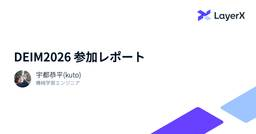
DEIM2026参加レポート  LayerX エンジニアブログ
LayerX エンジニアブログ
こんにちは、機械学習エンジニアの宇都(@kuto_bopro)です。 この記事は2026年2月28日 ~ 3月5日にオンライン・オンサイト（兵庫県神戸市）のハイブリッドにて開催されたDEIM2026 第18回データ工学と情報マネジメントに関するフォーラム（第24回日本データベース学会年次大会）の参加レポートです。 LayerXとしては、昨年に引き続きプラチナスポンサーとして協賛させていただき、企業ブースの展示と技術報告に参加させていただきました。 https://pub.confit.atlas.jp/ja/event/deim2026 今年は 2月28日〜3月2日にオンラインによる一般発表セ…
2日前
2026年3月6日のヘッドラインニュース 1 GIGAZINE
『ソードアート・オンライン』シリーズでデスゲームの舞台となった浮遊城「アインクラッド」を再現した家庭用ゲーム『Echoes of Aincrad』の情報が解禁されました。オリジナルのキャラクターを作成してダンジョンに挑むことができるほか、「デスゲームモード」により作中さながらの緊張感を味わうこともできます。続きを読む...
2日前
バーレーンのAmazonデータセンターがドローン攻撃の標的になったのは「敵の軍事・諜報活動を支援している」とイランの革命防衛隊が判断したから GIGAZINE
イスラエルとアメリカによるイランに対する攻撃を受けて、イランは多方面に対する反撃を行っています。このうち、バーレーンにあったAmazonのデータセンターへの攻撃について、イランのイスラム革命防衛隊は「敵の軍事・諜報活動を支援する役割を果たしていることを特定した上での対応」と説明しています。続きを読む...
2日前
Firefoxがクラッシュする原因の最大15％がメモリのビット反転によるものだという分析結果 35 GIGAZINE
ソフトウェア実行時の不具合の多くはソフトウェアそのものや実行環境との相性によるものですが、ハードウェアが原因で不具合が発生する場合もあります。Firefox開発チームの一員であるガブリエレ・スヴェルト氏は、「Firefoxのクラッシュのうち最大15％はメモリに存在する物理的な欠陥が原因だった」という興味深い調査結果を報告しています。続きを読む...
2日前
岡田准一「世界ふしぎ発見！」ミステリーハンター挑戦 エジプトで歴史的瞬間に遭遇 シネマトゥデイ
俳優の岡田准一が、TBS系「世界ふしぎ発見！」のスペシャル番組「40周年特別版 世界ふしぎ発見！大発掘！黄金のマスクが出た！岡田准一エジプト特別潜入 3時間SP」（3月14日よる7時～）に、ミステリーハンターとして出演することが明らかになった。エジプトへ取材に赴いた岡田が、日本のテレビでは初となる貴重な機会に立ち会う。
2日前
内田夕夜＆三石琴乃『プロジェクト・ヘイル・メアリー』日本版声優に決定 吹替版予告編公開 シネマトゥデイ
映画『オデッセイ』の原作者アンディ・ウィアーのベストセラーが原作のSF超大作『プロジェクト・ヘイル・メアリー』（3月20日公開）の日本語版声優として、ライアン・ゴズリングが演じる主人公グレース役の内田夕夜、グレースを宇宙に送りこむプロジェクトリーダー・ストラット役の三石琴乃をはじめ、人気声優の参加が発表された。あわせて、本作の日本語版予告映像が公開された。
2日前
NHK版「悪魔の手毬唄」放送日＆追加キャスト発表 吉岡秀隆＆宮沢りえの場面写真公開 シネマトゥデイ
吉岡秀隆が主演を務めるNHKの金田一耕助シリーズ第5弾「悪魔の手毬唄」が、BSプレミアム4Kにて3月14日・21日に前後編で放送されることが決定した。BSプレミアム4Kにて前編が3月14日、後編が3月21日の夜9時から10時29分放送予定。11月以降にNHK BSでの放送も予定されている。あわせて追加キャストが発表され、吉岡と宮沢りえの場面写真が公開された。
2日前
Rails: Hotwire Nativeをデバッグする（5）ブレークポイント（翻訳） 2
TechRacho
概要 元サイトの許諾を得て翻訳・公開いたします。 英語記事: Debugging Hotwire Native - Start with the Obvious Questions | William Kennedy 原文公開日: 2025年11月11日 原著者: William Kennedy 日本語タイトルは内容に即したものにしました。 従来Turbo NativeとStradaと呼ばれていたものは、現在はHotwire Nativeに統合されました。 参考: Hotwire Native: Hotwire Native is a web-first framework for building native […]The post Rails: Hotwire Nativeをデバッグする（5）ブレークポイント（翻訳） first appeared on TechRacho.
2日前
吉田美月喜、NHK版「悪魔の手毬唄」で人気歌手役 追加キャスト＆放送日発表 シネマトゥデイ
吉岡秀隆が主演を務めるNHKの金田一耕助シリーズ第5弾「悪魔の手毬唄」が、BSプレミアム4Kにて3月14日・21日に前後編で放送されることが決定した。あわせて追加キャストが発表され、映画『あつい胸さわぎ』や『カムイのうた』などで注目を浴びる吉田美月喜が人気歌手役で出演することが明らかになった。
2日前
奥平大兼、NHK版「悪魔の手毬唄」で温泉宿の長男・青池歌名雄役 追加キャスト＆放送日発表 シネマトゥデイ
吉岡秀隆が主演を務めるNHKの金田一耕助シリーズ第5弾「悪魔の手毬唄」が、BSプレミアム4Kにて3月14日・21日に前後編で放送されることが決定し、奥平大兼がメインキャストとして出演することが明らかになった。
2日前
GIGAZINE価格表・媒体資料を2026年3月版に更新しました！ 1 GIGAZINE
GIGAZINEでは2025年12月に実施したプレゼント記事のアンケート結果を1週間に1回のペースで記事として掲載しています。続きを読む...
2日前
妹を救うため禁じられた森を冒険する『最強少年はチートな（元）貴族だった９』が発売／ローランドは薬学に通じたエルフが住む人間を拒む閉ざされた集落を目指す【Book Watch/ニュース】 窓の杜
（株）インプレスは2月27日、インプレス NextPublishingより『最強少年はチートな（元）貴族だった９ 転生冒険者の異世界スローライフ』（著者：こばやん２号、イラスト：なぎのにちこ）を発売した。紙書籍版の販売価格は2,200円（税別）、電子書籍版の販売価格は1,300円（税別）。
2日前

NLP2026（言語処理学会第32回年次大会）にプラチナスポンサーとして協賛します LayerX エンジニアブログ
こんにちは、バクラク事業部で機械学習エンジニアをしている伊藤です。 LayerXは、NLP2026（言語処理学会第32回年次大会）にプラチナスポンサーとして協賛します。 イベント概要 当社の参加内容 スポンサー展示 懇親会 協賛の背景 おわりに 関連記事 イベント概要 NLP（言語処理学会年次大会）は、言語処理学会 が年に1度開催する、自然言語処理および関連分野の研究発表や交流の場として国内最大規模のイベントです。全国のアカデミアや企業からNLPの研究・開発に従事している人々が集い、研究発表と活発な議論がなされる場です。LayerXからはバクラク事業部・Ai Workforce事業部を含む数名…
2日前

「1日ビール1本」相当のアルコールをウガンダのチンパンジーが摂取していると判明 ナゾロジー
「毎晩のビールがやめられない」という人は少なくありません。 同じように、あるチンパンジーたちも定期的にアルコールを摂取しているようです。 アメリカのカリフォルニア大学バークレー校（UCB）の研究チームは、ウガンダの野生チンパンジーの尿を分析し、彼らが発酵した果実から相当量のアルコールを取り込んでいることを確認しました。 調査では、人間の標準的なアルコールドリンク1杯強に相当する量のアルコールを、日常的に摂取している可能性が示されました。 この研究は2026年2月25日付の学術誌『Biology Letters』に掲載されています。
2日前
フルーツの酸味・甘味と香ばしさがザクザク食感にマッチする「グラノーラサンダーミニバー」試食レビュー 1 GIGAZINE
有楽製菓のファミリーパック「ブラックサンダーミニバー」シリーズから「グラノーラサンダーミニバー」が2026年3月16日(月)に登場します。ブラックサンダーらしいザクザク感はそのままに、香ばしさとフルーツの酸味・甘味を組み合わせた「グラノーラ」が加わっているとのことで、一足早く食べられる機会を得られたのでどんな味なのか確かめてみました。続きを読む...
2日前
綾瀬はるか×ヒゲダン藤原聡の2ショットも！『人はなぜラブレターを書くのか』場面写真＆メイキングカット公開 シネマトゥデイ
2000年3月に起こった地下鉄脱線事故で短い生涯を閉じた富久信介さんと、彼に密かに想いを寄せていた少女の奇跡の物語を描く映画『人はなぜラブレターを書くのか』から、新たに場面写真やメイキングカットが公開された。20年の時を経て届いた1通のラブレターに感銘を受けた石井裕也監督が映画化を熱望し、実現に至った。
2日前
元側近ボルトン氏 トランプ政権のイラン攻撃は「熟考の産物ではない」 (トランプ2.0の世界) 日経ビジネス電子版 最新記事
1月のベネズエラ、2月のイラン。第2次トランプ政権が立て続けに展開する電撃的な軍事作戦の裏に、果たして米国の「壮大な戦略」はあるのか？ 長年イランの体制転換を提唱してきた強硬派の重鎮、ジョン・ボルトン元大統領補佐官を直撃した。
2日前
中東の戦火、欧州周縁のキプロスへ ドローン攻撃に各国が防衛体制を強化 (欧州コンパス) 日経ビジネス電子版 最新記事
中東の戦火は「欧州陣営」にも襲来した。地中海に浮かぶ分断国家キプロスにドローン攻撃があり、欧州各国はキプロス沖に軍備を集結させ始めた。イラン攻撃にはくみしないが、地理的な近さ故に巻き込まれる形で欧州は「防衛戦」に突入した。
2日前
ニデックに見くびられた監査法人 「永守リスクは当然認識できた」 (ガバナンスの今・未来) 日経ビジネス電子版 最新記事
ニデックの会計不正問題に関する第三者委員会の調査報告書は、ニデックが監査法人を「完璧にマネジできる（動かせる）」とするなど、くみしやすい相手だと見ていたと指摘した。なぜ監査法人はニデックに甘く見られたのか。会計不正を防ぐために監査機能を強化するにはどうしたらいいのか。かつて金融庁の公認会計士・監査審査会事務局長も務めた佐々木清隆・一橋大学客員教授に聞いた。
2日前
米軍のイラン攻撃、短期間なら「原油1バレル＝80～100ドル」の高騰は一時的 (上野泰也の先読みマーケット) 日経ビジネス電子版 最新記事
3月9日から週は、米国・イスラエルの対イラン軍事作戦を受けた混乱が短期か長期かの見極めが重要なカギを握る。軍事力の差などから見れば、短期間で終わるというのが論理的な予測で、1バレル＝80～100ドルといった原油価格の高騰は、仮にあっても一時的だと上野泰也氏は見ている。
2日前
現地ルポ アルゼンチン国民、ドル建てステーブルコイン選択「もう戻れない」 (ステーブルコイン革命) 日経ビジネス電子版 最新記事
アルゼンチンの首都ブエノスアイレスには暗号資産を販売する店舗が複数あり、対面でビットコインやステーブルコインが売られている。自国通貨や銀行への信用が薄い国民感情が、ドルに価値が連動する暗号資産での資産防衛に走らせている。現地に入り、店主や市民の声などから暗号資産が広がる実態を探った。
2日前
人工筋肉で腰痛予防 ダイヤ工業、アシストスーツで現場作業者の健康守る (日経トップリーダー) 日経ビジネス電子版 最新記事
ダイヤ工業（岡山市）は医療用コルセット・サポーターなどの製造を手掛ける。身体の動きを補助する製品にも早くから着手し、アシストスーツ製品を開発した。労働力不足と健康経営のニーズに対応し、アシストスーツ事業を国内外に拡大する。
2日前
核融合実験炉に潜入 1億℃を超える人工太陽を生み出す舞台裏 (ナショナル ジオグラフィック) 日経ビジネス電子版 最新記事
動画も2本あります。ナショジオの写真家がドイツにある核実験融合炉「ヴェンデルシュタイン7-X」の内部に入ることを許可されました。
2日前
かつてネットは「フリー」が当たり前だった (松浦 晋也の「チガサキから世間を眺めて」) 4 日経ビジネス電子版 最新記事
クリス・アンダーソンの『フリー』を読んだ時は「これはまたずいぶんと極端な主張だ」と感じたが「サブスク地獄」が現実を侵食する今になって読み直すと「この行き方は確かにある」と思える。
2日前
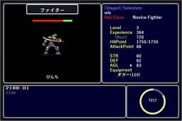
RPG×タイピング練習ゲーム「TypingSaga」で子供も楽しくタイピングを学べるか？／難易度は高めだが、大人向けの変わり種のタイピングソフトとして楽しめる【レビュー】 29窓の杜
少し前から、小学生向けのタイピング練習ソフトを探している。一昔前は、フリーソフトからアーケードゲームまでさまざまなソフトがあったものだが、最近は注目される新作ソフトの話は聞かない。
2日前
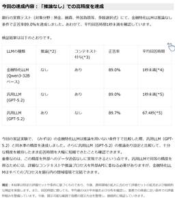
みずほFGの自社LLM、「GPT-5.2と同精度」でオンプレ運用可能 「Qwen3-32B」ベース 30ITmedia AI＋ 最新記事一覧
機密性の高いデータもGPT-5.2同等のAI処理を安全に適用できるとしている。
2日前
デスクトップPCにもCopilot+ PCを持ち込む「Ryzen AI 400」が発表 1窓の杜
AMDが新型のデスクトップPC向けCPU「Ryzen AI 400」シリーズを発表した。発売は2026年第2四半期（4～6月）の予定で、HPやLenovoなどのOEMから提供するとしている。
2日前
Wikipediaの管理者アカウントが侵害を受けてしまい読み取り専用モードに一時突入 14 GIGAZINE
オンライン百科事典のWikipediaを含むウィキメディア・プロジェクト全般において、深刻なセキュリティインシデントが2026年3月5日に発生しました。この問題により、ウィキメディア財団の管理者アカウントが侵害され、複数の言語版でページの大量削除や荒らしが相次いだため、一時的にサイト全体が読み取り専用モードとなり、JavaScript機能が停止される事態に発展しました。続きを読む...
2日前
巨大掲示板「5ch」がドメインを剥奪されたことが判明、5ch.netから5ch.ioに変更して運営は続行 63 GIGAZINE
掲示板サイト「5ちゃんねる(5ch)」のドメインが管理事業者によって剥奪されたことが明らかになりました。5ちゃんねるの運営自体はドメインを「5ch.net」から「5ch.io」に変更して続行されています。続きを読む...
2日前
もしも2026年にFlashが作られていたら？という「新しいFlash」構築中、古いファイルを開いて編集も可能 40 GIGAZINE
かつてはAdobe Flashを使って製作されたアニメーションやゲーム、動画コンテンツが数多く公開されていましたが、AdobeがFlash Playerの配布と更新を2020年12月31日に終了したことで、新しいコンテンツの作成および実行が基本的にはできなくなりました。ゲーム開発者のビル氏は、「2026年にFlashが作られていたらどうなるか」というコンセプトのもと、新しいFlashを作成するプロジェクトについて解説しています。続きを読む...
2日前
システムカスタマイズツール「Winaero Tweaker」v1.65、UIやUEFIのオプションを拡充／タスクバーだけにアクセントカラーを適用、バッテリーレポートの生成を改善 3窓の杜
システムカスタマイズツール「Winaero Tweaker」が2月26日、v1.65へアップデートされた。本バージョンでは以下の新しいオプションが導入されている。
2日前
AIの影響を受けやすい職業の傾向や労働市場に変化は見られるのかについてAnthropicが報告 2 GIGAZINE
近年はAIの急速な普及により、「AIで代替可能な職種の失業者が増える」「新規採用が滞る」といった懸念が強まっています。チャットAIのClaudeを開発するAnthropicが、AIの影響を受けやすい職種や労働市場への影響についてのレポートを公開しました。続きを読む...
2日前
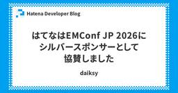
はてなはEMConf JP 2026にシルバースポンサーとして協賛しました Hatena Developer Blog
こんにちは。技術グループ長のid:daiksyです。 はてなは、2026年3月4日(水)に開催された、EMConf JP 2026にシルバースポンサーとして協賛しました。 2026.emconf.jp はてなではエンジニアの人数が100名を超え、組織体制を整えるための手段のひとつとしてエンジニアリングマネージャーの登用・育成に力を入れています。はてなが主催する「エンジニアセミナー」でもそれらの取り組みを紹介していました。 developer.hatenastaff.com まさに今我々が直面している課題とも直結するため、EMConfの参加を通じてコミュニティとも接続しながら、微力ではありますが…
2日前
日本生命の米国法人、OpenAIを提訴 ChatGPTが「法律業務」 2ITmedia AI＋ 最新記事一覧
日本生命保険の米国法人は、対話型のAI「ChatGPT」が弁護士資格を持たずに法律業務を取り扱い、保険金の元受給者が和解合意を破って訴訟を乱発するのを手助けしたとして、ChatGPTを運営する米OpenAIを米国イリノイ州シカゴの連邦地裁に提訴した。
2日前
“政府認定AI”選定へ デジタル庁、国産7モデルを検証 全府省庁18万人に展開 34ITmedia AI＋ 最新記事一覧
デジタル庁は3月6日、政府調達を前提に、生成AIプラットフォーム「源内」で試用する国産LLM（大規模言語モデル）を発表した。NTTグループの「tsuzumi 2」、ソフトバンクの「Sarashina2 mini」など7モデルを選定。5月から2027年3月にかけて、これらの利用を前提に、源内を全府省庁の職員約18万人に展開。実用性を検証していく。
2日前
中国が新たな5カ年計画の案でAIに50回以上言及、量子コンピューティング・第6世代移動通信(6G)・身体化AIも 1 GIGAZINE
中国が2026年3月5日に最高議会である第14期全国人民代表大会第4回会議で政府活動報告を発表し、第15次5カ年計画(2026年～2030年)に向けた政策方針を示しました。続きを読む...
2日前
GoogleがAI性能比較サービス「Android Bench」を公開、AIの「Android開発への役立ち度」をランク付けし初回はGeminiがトップ 2 GIGAZINE
Googleが各種AIの性能をランク付けする「Android Bench」を公開しました。初回のランキングではOpenAIやAnthropicのモデルを抑えてGemini 3.1 Pro Previewがトップの座を獲得しています。続きを読む...
2日前
トム・ホランドと結婚報道のゼンデイヤ、婚約指輪と結婚指輪を重ね付け シネマトゥデイ
『スパイダーマン』シリーズのトム・ホランドとすでに結婚したといわれている女優のゼンデイヤが、新作映画のプロモーションでの撮影で左手薬指に婚約指輪と結婚指輪を重ね付けしているとして、話題を呼んでいる。
2日前
GMOとPFNが資本提携、合弁会社を設立 「国産AI環境」提供へ 1ITmedia AI＋ 最新記事一覧
Preferred Networksは、GMOインターネットグループと同社傘下のGMOサイバーセキュリティ byイエラエと資本業務提携し、合弁会社「GMO Preferred Security」を設立したと発表した。
2日前
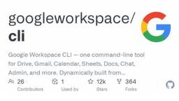
Google Workspace CLIリリース、Googleドライブ・Gmail・Googleスプレッドシート・Googleドキュメントなどを1つのコマンドラインツールで一括管理可能＆AIエージェントのスキルもあり 7 GIGAZINE
Google Workspaceの主要なサービスを網羅的に管理できる新たなコマンドラインツール「Google Workspace CLI(gws)」が2026年3月6日にリリースされました。このツールは、GoogleドライブやGmail、Googleカレンダー、Googleスプレッドシート、Googleドキュメント、Google Chat、さらに管理コンソールに至るまで、広範なアプリケーションを一括して1つのコマンドラインで操作することを可能にします。続きを読む...
2日前
Netflixが俳優ベン・アフレック創業の映画制作者向けAIスタートアップ「InterPositive」を買収 2 GIGAZINE
バットマンを演じた俳優の1人として知られるベン・アフレック氏が2022年に創業したAIスタートアップの「InterPositive」をNetflixが買収したと発表しました。スタッフは全員Netflixにそのまま参加し、アフレック氏もシニアアドバイザーとして関わり続けるとのことです。続きを読む...
2日前
「Xbox」アプリでゲームパッド操作時のみ操作フィードバック音を再生する機能が追加／「ROG Xbox Ally」シリーズにも複数のアップデート 1窓の杜
マイクロソフトは、Xboxの公式ニュースブログXbox Wireにて、PCを含むXbox関連の2月のアップデート情報を公開した。
2日前
Anker Soundcoreの完全ワイヤレスイヤホンが安い！【Amazon新生活セール】【本日みつけたお買い得情報】 窓の杜
Amazon.co.jpでは、3月9日（月）までの期間限定で春のビッグセールである「新生活セール」を開催しています。
2日前
AI企業のAnthropicが「アメリカの国家安全保障に対するサプライチェーンリスク」に正式に指定される、Anthropicは法廷闘争を宣言 3 GIGAZINE
Claudeなどの開発で知られるAI企業のAnthropicがアメリカ国防総省(戦争省)によって「国家安全保障に対するサプライチェーンリスク」に指定されたことが明らかになりました。続きを読む...
2日前
マイクロプラスチックがパーキンソン病の原因になっている可能性があると科学者らが警告 2 GIGAZINE
プラスチックは食器・家具・日用品・包装など幅広い場面で使用されており、もはや現代社会にとってなくてはならない存在です。しかし、近年は直径5mm未満のマイクロプラスチックや1μm(マイクロメートル)未満のナノプラスチックによる環境汚染や、人体に悪影響を与える可能性が懸念されています。新たに、中国の研究チームが100件を超える過去の研究を参照し、マイクロプラスチックがパーキンソン病の発症に関与している可能性があると警告しました。続きを読む...
2日前
「国産四足歩行ロボ」でクマを追い払う 東大発スタートアップのねらい イメージは「エヴァ」？ 1ITmedia AI＋ 最新記事一覧
国産の四足歩行ロボットでクマ被害を未然に防ぐプロジェクト「KUMAKARA MAMORU」。同プロジェクトを手掛けるHighlandersの代表に、詳細や今後の展望などを聞いた。
2日前
津田健次郎＆眞栄田郷敦、W尾形の対談実現！実写『ゴールデンカムイ』特別映像が公開 1 シネマトゥデイ
累計発行部数3,000万部を突破する野田サトルの人気漫画を、山崎賢人（崎は「たつさき」）主演で実写化した大ヒット映画の第2弾『ゴールデンカムイ 網走監獄襲撃編』（3月13日公開）。同作で、人気キャラクターの一人・尾形百之助を演じる眞栄田郷敦と、アニメ版で尾形の声を担当する津田健次郎との対談が実現した。
2日前
『MONDAYS』竹林亮監督が透明人間をテーマにした新作、8月公開！主演は毎熊克哉 シネマトゥデイ
『14歳の栞』、『MONDAYS／このタイムループ、上司に気づかせないと終わらない』などの竹林亮監督の新作映画『見えない娘 THE INVISIBLES』が、8月より公開されることが明らかになった。主演は毎熊克哉。併せてティザービジュアル、ティザー映像が公開された。
2日前
浅野忠信＆大森南朋『殺し屋1』4Kで復活 三池崇史監督の伝説的バイオレンスが5月公開 シネマトゥデイ
漫画家・山本英夫の代表作を、三池崇史監督が映画化した『殺し屋1』（2001）が、公開から25年となる今年、4Kリマスター版『殺し屋1 4K』として5月15日より全国公開されることが決定した。三池監督と撮影の山本英夫が監修を務める。
2日前
Vibe Codingは実プロジェクトで通用するのか？ 約6ヶ月試してわかったことと必要なスキル 41 松尾研究所テックブログのフィード
松尾研究所テックブログのフィード
1. はじめに：この記事の前提と、私の定義する「Vibe Coding」本題に入る前に、少しだけ私の立ち位置とこの記事の前提をお話しさせてください。私はプログラマーとして約5年働いた後、現在はデータサイエンティストとしてAI構築とシステム構築を並行して行っています。そのため、この記事でお話しする 「Vibe Codingは実プロジェクトで通用する」という結論は、あくまで私が身を置くデータサイエンスやAI開発の領域での話かもしれません。純粋なWebフロントエンド開発や、巨大なエンタープライズ系システムなど、他のIT分野でそのまま通用するかどうかは私自身テストしていません。しかし...
2日前
LenovoのノートPC「IdeaPad Slim 3」が81,800円から！【Amazon新生活セール】【本日みつけたお買い得情報】 窓の杜
Amazon.co.jpでは、3月9日（月）までの期間限定で春のビッグセールである「新生活セール」を開催しています。その一環としてLenovo製ノートパソコンのセールが行われており、「IdeaPad Slim 3」がお買い得となっています。
2日前
ザバスのプロテインが安い！粉末、液体、プロテインバーなど【Amazon新生活セール】【本日みつけたお買い得情報】 窓の杜
Amazon.co.jpでは、3月9日（月）までの期間限定で春のビッグセールである「新生活セール」を開催しています。ザバスのストアでは、明治「ザバス」シリーズのプロテインのセールが行われています。
2日前

APMとは？——アプリケーションパフォーマンスモニタリングの基本を解説  Mackerel ブログ #mackerelio
Mackerel ブログ #mackerelio
APM（アプリケーションパフォーマンスモニタリング）とは何か、なぜ必要なのかを初心者向けに解説。サーバー監視との違いや、パフォーマンス問題の特定・障害対応の迅速化といった解決できる課題、導入時に押さえておきたいポイントまで、基本をまとめました。
2日前
GoogleのAI情報収集ツール「NotebookLM」でノートの内容を動画にまとめる「ビデオ概要」機能が進化 10 GIGAZINE
Googleの「NotebookLM」はインターネット上の情報などを読み込ませて要約などを実行できるAIツールで、2025年7月にはノートブックの内容を動画にまとめる「ビデオ概要」が登場しました。そんなNotebookLMのビデオ機能がアップデートし、簡単なスライドショーとナレーションだけではなく映画のような映像を作成できる「シネマティックビデオ概要」の生成が可能になりました。続きを読む...
2日前
日本通信の格安SIM/eSIMの申込パックが2,400円！【Amazon新生活セール】【本日みつけたお買い得情報】 窓の杜
Amazon.co.jpでは、3月9日（月）までの期間限定で春のビッグセールである「新生活セール」を開催しています。その一環として日本通信SIMのスターターパックのセールが行われています。
2日前
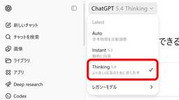
OpenAIが「GPT-5.4」をリリース、人間より上手にPCを操作できる「エージェント性能に優れた最も有能で効率的なフロンティアモデル」 2 GIGAZINE
OpenAIが専門的な業務に特化して設計された最新のフロンティアモデルであるGPT-5.4を2026年3月5日にリリースしました。このモデルはChatGPT、API、Codexを通じて展開され、推論やコーディング、自律的なエージェントとしてのワークフローにおける成果が一つのモデルに集約されています。より高度な推論を行う「GPT-5.4 Thinking」や、複雑なタスクで最高の性能を発揮する「GPT-5.4 Pro」も同時に発表されており、これらは特に知識労働やプロフェッショナルな実務において高い能力を発揮するように構築されています。続きを読む...
2日前
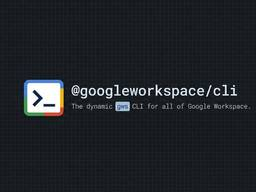
「Google Workspace CLI」がリリース、AIエージェントのためのCLIツール／「Gmail」や「ドライブ」などのGoogle Workspace APIを1つのコマンドで 25窓の杜
米Googleは3月4日（現地時間）、「Google Workspace CLI」をリリースした。「GitHub」でホストされているオープンソースプロジェクトで、ライセンスは「Apache-2.0」。Windows/Mac/Linux向けのバイナリが用意されている。
2日前
『ハリー・ポッター』大人になったハリー＆マルフォイが仲良すぎ！再会ハグショットにファン大興奮 シネマトゥデイ
映画『ハリー・ポッター』シリーズでライバル同士を演じ、現在はそれぞれブロードウェイの舞台に立っているダニエル・ラドクリフ（ハリー役）とトム・フェルトン（ドラコ・マルフォイ役）の再会ハグショットが公開され、ファンが大興奮している。
2日前
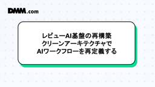
レビューAI基盤の再構築 — クリーンアーキテクチャでAIワークフローを再定義する  DMM Developers Blog
DMM Developers Blog
はじめに ワークフローをインフラに委ねなかった理由 全体構造：クリーンアーキテクチャの適用 DDDでワークフローを表現する Value Object Rich Domain Model Domain Service （ワークフロー） ① 実行形態からの完全分離 ② Protocolによる依存性逆転 ③ Model Adapterで将来耐性を確保 ④ Observabilityと整合する構造 まとめ はじめに こんにちは。プラットフォーム開発本部 第４開発部 ユーザーレビューグループの大野です。 私たちは、DMMに投稿されるユーザーレビューを処理するバックエンド基盤を開発・運用しています。 レビ…
2日前
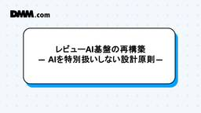
レビューAI基盤の再構築 — AIを特別扱いしない設計原則 — DMM Developers Blog
はじめに プロダクトAIはバックエンド機能である なぜAIはワークフロー化するのか 分散SaaSが生んだ構造的負債 設計原則 — AIを特別扱いしない 再設計の3つの軸 1. 実行基盤の統一（Kubernetes） 2. ドメイン境界の明確化（DDD） 3. ワークフロー内部の可観測性（Observability） 統合の成果 まとめ はじめに こんにちは。プラットフォーム開発本部 第四開発部 ユーザーレビューグループの松井です。 私たちは、DMMに投稿されるユーザーレビューを処理するバックエンドAPIを開発・運用しています。レビューの投稿・表示は、ユーザー体験を支える基盤機能です。 そのため…
2日前
Argo EventsとArgo Workflowsの導入によるリリースパイプラインの改善 ZOZO TECH BLOG
はじめに こんにちは。グローバルプロダクト開発本部SREブロックの纐纈です。 弊チームでは、Kubernetes上で動作する4つのサービス（ZOZOMAT、ZOZOGLASS、ZOZOMETRY、お試しメイク）のリリースを自動化しています。これまでにArgo CDによるGitOpsやArgo Rolloutsによるカナリアリリースを導入してきました。 techblog.zozo.com techblog.zozo.com リリースパイプラインの全体像については以下の記事で紹介しています。 techblog.zozo.com 本記事では、このリリースパイプラインのトリガー方式を見直した取り組みに…
2日前

Vol.10 立ち上げからリリースまで、「シュッと話す」文化で走り抜けたSDI開発チームの話  Sansan Tech Blog
Sansan Tech Blog
この記事は、Sansan Data Intelligence 開発Unit ブログリレーのVol.10です。こんにちは、技術本部 Data Intelligence Engineering Unitのエンジニアの遠藤です。これまでのブログリレーでは、技術選定やアーキテクチャなど、システムの設計や技術的な側面を中心にお伝えしてきました。今回は少し視点を変えて、技術ではなく「チーム」にフォーカスし、Sansan Data Intelligence（以下、SDI）の開発チームがどのように立ち上がり、約6カ月でリリースまで走り抜けたのかをお話しします。
2日前
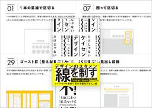
デザインのクオリティが劇的にアップする！ 罫線の定番の使い方から洗練された使い方まで徹底的に解説したデザイン書 -だけじゃない ケイセン デザイン 1 コリス
コリス
※本ページは、アフィリエイト広告を利用しています。 デザインでよく使用する要素の一つにケイセン、罫線があります。Webサイトやスマホアプリをはじめ、紙のデザイン、ポスター、パッケージなど、あらゆるデザインに罫線が使用され […]
2日前
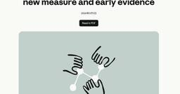
Anthropic、AIの労働市場インパクトを測る新指標 プログラマーは75％、清掃員は0％ 56ITmedia AI＋ 最新記事一覧
Anthropicは、AIが労働市場に与える影響を測定する新指標を発表した。理論上の能力だけでなく、実際のClaude利用データを組み合わせた「実測露出度」を用いているのが特徴だ。プログラマーなどの職種で影響が高い一方、肉体労働への影響は限定的。現時点で失業率の構造的な上昇は見られないが、政策対応のための早期警告として活用を目指す。
2日前

BigQueryのデータマスキング機能を解説  G-gen Tech Blog
G-gen Tech Blog
G-gen のminです。BigQuery のデータマスキング機能を解説します。データマスキングを使うと、機密情報をマスキングして特定できない形でクエリ結果に表示させることができ、分析を阻害せずにデータを保護することができます。 データマスキングとは 概要 列レベルのアクセス制御との違い 仕組み 権限とロール マスキングルールの種類 定義済みルール カスタムマスキングルーチン ルールの優先順位 設定手順 分類とポリシータグの作成 データポリシーの作成 テーブル列へのタグ付け データポリシーの列への直接付与 制約と注意点 互換性のない機能 SQL で利用する際の注意点 コストへの影響 セキュリテ…
2日前
確定申告の書類整理に無料から使えるAdobe ScanやAdobe Acrobatの各種ツールを役立てよう【教えて！助けて!! Adobe先生】 1窓の杜
確定申告のシーズンもそろそろ終盤です。2026年（令和7年分）の確定申告期間は3月16日（月）までとなっています。確定申告に臨むために、必要書類をすべて集め、領収書を整理し、すべてが正確であることを確認するのは、非常に負担が大きい作業だと感じることもあるでしょう。
2日前
CHROが“AI責任者”になる時代 「ITと人事の断絶」を打ち破る、新・組織論
1ITmedia AI＋ 最新記事一覧
多くの企業が生成AIの導入を進めている。しかし、その取り組みは本当に競争力の向上につながっているだろうか。AIを労働力として前提にしたとき、企業の組織設計はどう変わるのか。そして、その設計を主導するのは誰か。いま起きているのは単なるテクノロジー導入ではない。人事戦略とデジタル戦略を統合し、組織そのものを組み替える構造転換だ。
2日前

「Google Chrome」のリリースサイクルが4週間から2週間へさらに短縮、2026年9月より／「Chrome 153」安定（Stable）版を皮切りに実施 4窓の杜
米Googleは3月3日（現地時間）、「Google Chrome」のリリースサイクルを4週間から2週間へ短縮する方針を発表した。2026年9月より実施される予定。
2日前
OpenAI、「GPT-5.4」リリース PC操作のネイティブ対応、思考の途中変更も可能に 9ITmedia AI＋ 最新記事一覧
OpenAIは、最新AIモデル「GPT-5.4」をリリースした。推論やコーディング、PC画面を認識して操作する「computer use」機能を統合したフロンティアモデルという位置づけだ。思考プロセスへの介入が可能なThinkingモデルや、高度な推論を行うProモデルを提供。高い性能を示す一方、安全性の監視に関する課題も報告されている。
2日前
一度の顔登録で複数サービス利用可能 NECの顔認証基盤、トライアルなどで実証導入へ  ITmedia AI＋ 最新記事一覧
ITmedia AI＋ 最新記事一覧
NECは「リテールテックJAPAN 2026」において、一度の顔登録で複数サービスを横断利用できるプラットフォーム「NEC顔リンクサービス」を出展した。個別登録の煩わしさを解消し、シームレスな顔パス経済圏の社会実装を目指す。
2日前
ChatGPTやGeminiからClaudeへカンタンに移行できる？ 新しい「メモリインポート機能」を試してみた 29ITmedia AI＋ 最新記事一覧
多くのチャットボットサービスにはユーザー情報を要約したメモリと呼ばれるものがあります。そして、Claudeでは他のサービスのメモリをカンタンにインポートできるようになったので、ちょっと試してみましたよ。
2日前
ソニーがステーブルコイン／トヨタ、中東向け減産／原油高で家計負担3.6万円（2026年3月6日版） (日経ビジネスAUDIOモーニング) 日経ビジネス電子版 最新記事
[新連載]ソニーG、エンタメ事業の決済に時価総額5年で10倍超のステーブルコイン／トヨタ、3月に中東向け２万台減産 米イラン攻撃受け／ホルムズ海峡封鎖「原油97ドルで家計負担3.6万円増！」第一生命・永濱氏、他
2日前
ホルムズ海峡封鎖「原油109ドルで家計負担3.6万円増」第一生命・永濱氏 (世界の今日本の将来) 日経ビジネス電子版 最新記事
永濱利廣・第一生命経済研究所首席エコノミストが、ホルムズ海峡封鎖に伴い想定される原油価格高騰の影響を試算した。「原油価格が1バレル109円程度になれば、2027年の消費者物価を0.9％程度押し上げる効果を持ちます。家計消費の負担増は3万6000円です。経済成長に対しては、26年度に0.38％pt、27年度に0.13％ptの負の効果が想定されます」
2日前
「最後の戦い」に挑むイラン、中東諸国攻撃は戦闘継続コストを意識させる狙い (トランプ2.0の世界) 日経ビジネス電子版 最新記事
米国とイスラエルが優位に戦闘を継続する中で、イランは湾岸諸国への反撃を続けている。最高指導者や軍幹部など主要な指導層を多数失いながら、戦い続ける姿は今までの国家とは「全く別の獣」（中東研究者）のようだ。イランは現体制を維持するため「最後の戦い」へと覚悟を決めている可能性がある
2日前
エミレーツ航空、ドバイ～羽田便を再開 脱出路「オマーンルート」に脚光 (欧州コンパス) 日経ビジネス電子版 最新記事
アラブ首長国連邦（UAE）のエミレーツ航空が3月5日、ドバイ～羽田便を運航する。米国とイスラエルによるイラン攻撃が始まってからは初の“復活”。しかし、中東の空域は依然として大部分が閉ざされており、日本航空のドーハ線も欠航が続く。現地では、「オマーンルート」が脚光を浴び始めた。
2日前
内戦かクーデターか ホルムズ海峡を封鎖し存亡を賭して戦うイランの未来 (世界の今日本の将来) 日経ビジネス電子版 最新記事
「イランはこの戦いを『自国の存亡を賭した最後の戦い』とみなしているのです。孤立することも覚悟しているでしょう」（田中浩一郎・慶応義塾大学教授）
2日前
サイバー攻撃、最後の砦は「人」 10代も活躍へ 防衛人材の裾野拡大 (ランサム攻撃は防げない) 日経ビジネス電子版 最新記事
ランサムウエア（身代金要求型ウイルス）をはじめとするサイバー攻撃は不審メールの開封など小さな隙を狙ってくる。一人ひとりの小さな対策の積み重ねが防御につながる。組織を守る最後の砦は「人」。サイバー防衛と事業をつなぐ人材教育が肝要だ。
2日前

［新連載］ソニー銀、エンタメ事業の決済に ステーブルコイン5年で総額10倍 (ステーブルコイン革命) 1 日経ビジネス電子版 最新記事
法定通貨と価値が連動する「ステーブルコイン」の時価総額は約46兆円に達した。ソニー銀行は米国での発行を目指し、エンタメ事業での利用を想定する。次世代の決済手段や金融インフラとしてステーブルコインを活用しようとする動きが世界中で進む。
2日前
PFAS対応コストは80兆円に EUは2026年末にも規制案 (ESGグローバルフォーキャスト) 日経ビジネス電子版 最新記事
食品包装から半導体、消火剤まで幅広い産業分野に欠かせない化学物質「PFAS」。健康被害を引き起こすとされ、医療費や環境汚染の対策費が膨らんでいる。EUは規制強化に動く一方、全廃には産業界からの反発も予想される。
2日前

［クイズ］ランサムウエア被害件数、2025年は世界で前年比何％増？ (日経ビジネス教養クイズ) 日経ビジネス電子版 最新記事
アサヒグループホールディングスやアスクルも被害に遭ったサイバー攻撃「ランサムウエア（身代金要求型ウイルス）」。2025年、世界の被害件数は前年比で何％増えたでしょう？
2日前
第六の象限 9 ニューロサイエンスとマーケティングの間 - Between Neuroscience and Marketing
Leica M10P, 1.4/50 Summilux ASPH, RAW 2015年の秋、ハーバード・ビジネス・レビューの誌上、そして経産省 産業構造審議会の場で、ひとつの地図を示した。縦軸にモノ・カネ、横軸にデータ・キカイをとった産業マトリックスだ。当時、多くの論者の目はGAFAを筆頭とするNew economyの台頭に向いていた。しかし僕が注目していたのはそこではなかった。リアルとサイバー両方の強みを持つ「未開領域」に、第三の勢力が現れる。そこが本当の主戦場になる、と。ーその見立ては、おおむね当たった。TeslaがGM (General Motors) の企業価値（時価総額）を初めて上回…
2日前
映画も音楽も「トークン化」 デジタル資産、急成長 AIかけ合わせ自動決済 (ステーブルコイン革命 ソニーも参戦、新デジタル通貨の破壊と創造) 日経ビジネス電子版 最新記事
ブロックチェーンを使うデジタル資産は人工知能（AI）との親和性が高い。人の手を介さず契約が自動で執行されたり、資金が移動したりする世界。既存の金融インフラを超え、速く、安く、自動でお金が動く未来はすぐそこだ。
2日前
イーサリアム創業メンバー、グーグルとつくる「秘密」と「平等」両立のブロックチェーン (ステーブルコイン革命 ソニーも参戦、新デジタル通貨の破壊と創造) 日経ビジネス電子版 最新記事
経営者・有識者インタビュー、ブライアン・コンソォボ氏、岡部 典孝氏、チャールズ・ホスキンソン氏
2日前
ステーブルコインは「ドル1強」 クリプトの冬、越えた米 通貨覇権、低金利狙う (ステーブルコイン革命 ソニーも参戦、新デジタル通貨の破壊と創造) 日経ビジネス電子版 最新記事
次世代の金融インフラになり得るステーブルコインは「ドル1強」の状態だ。CBDCが軸の中国については人民元建てコインの行方に注目が集まる。キープレーヤーの一つの香港で開かれた業界の国際会合を取材した。
2日前
新興国発、ステーブルコインの波 「安全なドル」に殺到 インフレ・通貨安、苦慮 (ステーブルコイン革命 ソニーも参戦、新デジタル通貨の破壊と創造) 日経ビジネス電子版 最新記事
自国通貨の弱い新興国でステーブルコインが急速に浸透している。米ドルと価値が連動した資産を合法的かつ手軽に入手できるからだ。アルゼンチンなどで、政府を信用しない国民の資産防衛策になっている。
2日前
法定通貨ではない 暗号資産って何？ (ステーブルコイン革命 ソニーも参戦、新デジタル通貨の破壊と創造) 日経ビジネス電子版 最新記事
ドルや円といった法定通貨と連動するブロックチェーン上のデジタル通貨、ステーブルコイン。預金のデジタル版「トークン化預金」やビットコインなどと比較しながら、その性質や特徴を整理していこう。
2日前
ソニー、エンタメ事業の決済に 急拡大のステーブルコイン (ステーブルコイン革命 ソニーも参戦、新デジタル通貨の破壊と創造) 日経ビジネス電子版 最新記事
ステーブルコイン発行を目指すソニー銀行は、ソニーグループのエンタメ事業の共通決済基盤での活用を検討していると明かした。既存の金融インフラに縛られまいと動くテック企業もあり、「着手しなけば出遅れる」との意識が国内外の企業を駆り立てている。
2日前
ステーブルコイン革命 ソニーも参戦、新デジタル通貨の破壊と創造 日経ビジネス電子版 最新記事
ビットコインなどと比べ価値が安定するステーブルコイン。決済や送金の時間とコストを抑える新たな金融インフラとして注目を集めている。自国通貨のぜい弱な新興国では一足飛びに浸透。ブロックチェーン上のデジタル通貨・預金で人工知能（AI）が自動決済する未来の世界が迫り、企業のビジネスや暮らしを変えつつある。
2日前
成田山にこもって考え続けた二宮金次郎は、自分の「見落とし」に気付いた (連載小説『二宮損得』) 日経ビジネス電子版 最新記事
小田原藩家老宅での家計再建の手法を、下野国（しもつけのくに）の農村に持ち込んでいた金次郎。再建の成果は上がっていたが、自らの手法に見落としもあったことに気付いた。成田山での瞑想で金次郎は大きな確信を得た。
2日前
江上剛氏が読む『火葬秘史 骨になるまで』〜新たな葬送の形を問う (CULTURE) 日経ビジネス電子版 最新記事
近年、日本では無縁社会が広がり、葬儀は大きく変化した。では、どんな形で送るのがいいのか。私たちは迷走のただ中にある。
2日前
「国内外に広がる内向き志向に危惧」 セーブ・ザ・チルドレン・ジャパン髙井氏 (有訓無訓) 日経ビジネス電子版 最新記事
子どもたちの支援をしていると、本当に困っていることが見えてきます。たとえば学校教育の現場。学生一人ひとりにタブレット端末の導入が進みましたが、一部の自治体では、当初、端末のカバーを自費で購入しなければなりませんでした。カバーがなければ学校から家に持ち帰れないルールなのに、家計が苦しくて購入する余裕がない。そんな学生もいるのです。
2日前
オリンパス竹内康雄会長「ヘルスケア企業転身の核は『患者第一』の姿勢だ」 (賢人の警鐘) 日経ビジネス電子版 最新記事
私が本コラムを執筆するのは今回が最後になる。これまでお読みいただいた方々に深く感謝しつつ、締めくくりとして、私がオリンパスの変革において最も重視してきた「真のヘルスケア企業への転換」について触れたい。
2日前
「リブラ」がこじ開けかけた窓 (編集長の視点／取材の現場から) 日経ビジネス電子版 最新記事
デジタル通貨と政府の攻防。この構図で思い起こされるのがメタ（旧フェイスブック）が2019年に構想を打ち出した「リブラ」です。法定通貨や国債などの資産に裏付けられたステーブルコインが、当時24億人のSNS利用者をベースに普及するインパクトは絶大。
2日前
共愛学園前橋国際大学・大森昭生学長 脱「ミニ東大」で地方を強く (編集長インタビュー) 1 日経ビジネス電子版 最新記事
全国の私立大学の半数超が定員割れに苦しむ時代に、異彩を放つ地方大学がある。徹底した地域密着型戦略で定員充足率100％超を維持し、大学関係者の熱い視線を浴びる。「学長が選ぶ学長」4年連続1位の学長に、あるべき地方大学の戦略を聞いた。
2日前
独自ブランドで挑む「ザ・ノース・フェイスの次」 ニッチな世界企業狙うゴールドウインの野望 (第2特集) 日経ビジネス電子版 最新記事
スポーツ・アウトドア衣料大手のゴールドウインが、英国に旗艦店をオープン。日本では「ザ・ノース・フェイス」を展開。アパレル業界屈指の急成長を遂げた。次に挑むのは自社ブランド「ゴールドウイン」による世界攻略。大勝負に出た。
2日前
2026年3月9日号 (バックナンバー目次) 日経ビジネス電子版 最新記事
価格が変動するビットコインなどと異なり、1コイン＝1ドルのように価値が固定されたステーブルコイン。決済や送金の時間とコストを抑える新たな金融インフラとして注目を集めている。自国通貨や経済のぜい弱な新興国では一足飛びに浸透してきた。ブロックチェーン（分散型台帳）上のデジタル通貨や預金で人工知能（AI）が自動決済する未来の世界が間近に迫り、企業のビジネスや市民の暮らしを変えつつある。
2日前
3/5 (木)
LLM「Qwen3.5」の開発コアメンバーが突然の辞任 「オープンウェイト戦略は継続」、開発元のAlibabaがコメント 8ITmedia AI＋ 最新記事一覧
オープンなLLM「Qwen3.5」シリーズの小型モデル発表直後に開発コアメンバーが辞任を発表したことで、ユーザーや開発コミュニティーから開発体制に対する不安の声が上がっている。同社はITmedia AI＋の取材に対し「オープンウェイトモデル戦略は継続する」と回答した。
3日前
“70年前の今日のラジオ”をAIで再現？ 当時のニュースやヒット曲を流せるデバイス 介護施設に導入へ 4ITmedia AI＋ 最新記事一覧
博報堂傘下で広告事業を手掛けるTBWA HAKUHODOは、AIが過去のニュースやヒット曲をラジオ番組風に紹介するデバイス「RADIO TIME MACHINE」（ラジオタイムマシーン）を開発したと発表した。介護施設への導入も検証する。
3日前

GENIAC3期のLLM開発で使用したロングコンテキスト評価のベンチマーク公開 1 ABEJA Tech Blog
ABEJAでデータサイエンティストをしている藤原です。 弊社は、経済産業省とＮＥＤＯが実施する、国内の生成AIの開発力強化を目的としたプロジェクト「GENIAC（Generative AI Accelerator Challenge）」の1期、2期に続き、3期にも採択され、そこで大規模言語モデルの開発を行っています。3期ではエージェントとして用いるための基盤モデルを開発しており、特にロングコンテキスト処理性能と Planning / Tool Use などの agentic な能力の向上に重点を置いて開発を進めております。 これまでにも、開発の過程で行ったロングコンテキストLLM評価に関するい…
3日前
Rails: タイムゾーン処理で重大なバグを何か月も見落としていた話（翻訳） 3 TechRacho
概要 元サイトの許諾を得て翻訳・公開いたします。 英語記事: The timezone bug that hid in plain sight for months | Arkency Blog 原文公開日: 2026年02月05日 原著者: Szymon Fiedler 日本語タイトルは内容に即したものにしました。 Rails: タイムゾーン処理の重大なバグを何か月も見落としていた話（翻訳） 私たちは最近、ある金融プラットフォームにおけるデータ同期の問題を修正しました。この問題は誰にも気づかれないまま数か月に渡ってデータの不整合を引き起こしていたのです。バグの内容は、ある意味洗練されているとも言えるレベルのシン […]The post Rails: タイムゾーン処理で重大なバグを何か月も見落としていた話（翻訳） first appeared on TechRacho.
3日前
［独自］トヨタ、中東向け2万台規模減産へ 米イラン攻撃受けて3月に (クルマ大転換 変革の世紀) 日経ビジネス電子版 最新記事
トヨタ自動車が日本国内で生産する中東向け車種の生産調整を検討していることが分かった。期間は3月9日から31日までで、約2万台の減産を計画している。米国とイスラエルがイランを攻撃した2月28日以降、中東情勢が混乱していることを受けた措置だ。
3日前
ものづくりの祭典「Maker Faire Tokyo 2026」の開催日が発表 ～3月26日から参加者募集を開始／9月5日から6日まで、有明GYM-EXで開催
1窓の杜
（株）インプレスは、「Maker Faire Tokyo 2026」を9月5日（土）から6日（日）までの2日間、有明GYM-EX（東京都江東区有明一丁目10番1号）で開催する。3月26日から出展者や登壇者を募集開始し、締め切りは4月23日。出展者や登壇者の募集詳細は3月26日に公開予定となっている。
3日前
［ドキュメンタリー動画］ブルーカラーの逆襲 年収1000万円超のリアル (特集インサイド) 日経ビジネス電子版 最新記事
全国各地で工事中止や閉店が相次いでいる。背景にあるのは、現場労働者たちの著しい不足と賃金上昇だ。今や年収1000万円を超える技能者も珍しくない。特集「現場の復讐」の取材班がビデオカメラを携え、その実像に迫った。
3日前
「AIエージェントが雇用を生む」、AIリーダーズ会議で5つの新潮流を解説 (AIリーダーズ) 日経ビジネス電子版 最新記事
最近のAI（人工知能）エージェントの急速な進化は、AIによるツールの使用の高度化が背景にある――。日経BPが2026年3月4日に開催した「AIリーダーズ会議 2026 Spring」で、日経BP AI・データラボの中田 敦所長が、最近のAIトレンドについて解説した。
3日前
トランプ氏「全貿易断つ」脅し スペイン首相「共犯者にはならない」と屈せず (欧州コンパス) 2 日経ビジネス電子版 最新記事
米国による軍事基地の使用を断り、トランプ米大統領から「全貿易を断つ」と脅されたスペイン。同国のサンチェス首相は3月4日、10分余りにわたって国民にメッセージを届けた。米国のイラン攻撃を「違法」と断じ、スペインは「共犯者にならない」と言い切った。その演説の中身とは。
3日前
［動画］「電子の眼」王者ソニー、中韓勢の猛追にどう対抗？ 岩戸記者に聞く (ニュースの真相) 日経ビジネス電子版 最新記事
イメージセンサーで世界シェアトップを握るソニーの半導体事業について、岩戸寿記者が解説する。
3日前
イラン攻撃、無力痛感の独メルツ首相が「理解」 国際法をめぐる批判を避ける (世界展望～プロの目)
日経ビジネス電子版 最新記事
日本の論壇では米国・イスラエルによる国際法違反を批判する意見が強い。筆者も感情的には理解できる。だが中東から欧州までは飛行機でわずか約5時間と、地理的に近い。欧州諸国では中東に端を発する安全保障上の脅威やテロに対する危機感が、日本よりも強い。
3日前
経済安保こそ収益拡大の機会に 新ガイドラインが問う経営の責任と覚悟 (経済安全保障と企業経営術) 日経ビジネス電子版 最新記事
経済安全保障の取り組む経営に向けたガイドラインが策定された。真摯に向き合わない企業は今後、経営責任まで問われる可能性も出てきた。一方で、取締役会の位置付けに触れないなど、実効性を確保するには物足りなさも残る。
3日前
NTT系と関電が精緻な電力需給マッチング 再エネ調達に新たな国際競争軸 (日経ESG) 1 日経ビジネス電子版 最新記事
1時間単位で電力需給を一致させることが、再生可能エネルギーの調達に欠かせなくなる可能性がある。背景に何があるのか。
3日前
「SaaS is Dead」かどうか知らんが、AIエージェントはRPAの悪夢再来だぞ (木村岳史の極言暴論！) 2 日経ビジネス電子版 最新記事
IT／デジタルかいわいで最近の大きな話題といえば「SaaS is Dead」だろうね。AIエージェントの登場でSaaSが滅びるというものだ。ただねぇ、日本企業がこんなキャッチーな話題を伴うAIエージェントブームに乗せられたら、あの「悪夢」の再来だぞ。
3日前
会社の飲み会、「行きたくない部下」と「来てほしい上司」 (精神科医Tomyの心のコリ解消法) 日経ビジネス電子版 最新記事
会社の飲み会に行きたくない20代女性と、若手メンバーに飲み会に参加してほしいと考えている50代男性。それぞれの立場で悩みを抱える2人に、Tomy先生がアドバイスします。 @PdoctorTomy
3日前
日本は通貨危機の1、2歩手前に 円買い介入には限界がある (ビジネスTopics) 1 日経ビジネス電子版 最新記事
【日本は通貨危機の1、2歩手前に 円買い介入には限界がある】 日本の外貨準備高は約1.2兆ドルだが、1100兆円を超える家計資産が少しでも外貨へ流出すれば防衛ラインは容易に決壊する。日本は通貨危機の「1、2歩手前」にいるのかもしれない。
3日前
日本発のペロブスカイト太陽電池 近づく量産化に向け高まる期待と課題 (テーマ別まとめ記事) 日経ビジネス電子版 最新記事
ペロブスカイト太陽電池は、高効率かつ低コストでのエネルギー変換が可能な新しい太陽電池のこと。日本発の技術で、原料も日本で大量に取れる。軽量で柔軟性があり曲げられることでも注目を集めている。世界中で研究開発が進められ,実用化も間近だ。今回はペロブスカイト型太陽電池をめぐる注目の過去記事をピックアップする。
3日前
ネットワーク不要・サブスク不要！ 落合陽一氏の「vibe-local」でオフラインAIコーディングを体験してみた【生成AIストリーム】 351窓の杜
こんにちは、しらいはかせです。突然ですが、皆さんは「AIコーディング」に毎月いくら払っていますか？
3日前
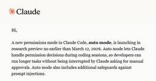
Claude Codeに「オートモード」登場 承認作業をAIで自動化 70ITmedia AI＋ 最新記事一覧
米Anthropicが、AIコーディング支援ツール「Claude Code」に、承認作業をAIで自動化する新モード「auto mode」を追加することが、ユーザー向けの通知から分かった。
3日前
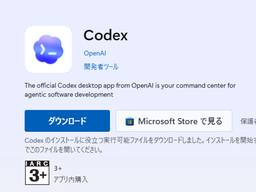
macOS版に遅れること1カ月、OpenAIがWindows版「Codex」アプリをリリース／コーディングエージェントたちの指揮所 2窓の杜
米OpenAIは3月4日（現地時間）、「Codex」アプリ（Codex app）をWindows向けにリリースした。macOSは1カ月前から提供中。
3日前
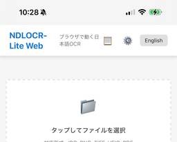
モバイルでも快適に！ Web版「NDLOCR-Lite」が進化 ～国会図書館の軽量AI-OCRツール／勝手な要望を聞き入れてくださり、感謝感激【やじうまの杜】 41窓の杜
「やじうまの杜」では、ニュース・レビューにこだわらない幅広い話題をお伝えします。
3日前

言語処理学会第32回年次大会 (NLP2026) でAI Shiftから3件の発表を行います  TECH BLOG | 株式会社AI Shift
TECH BLOG | 株式会社AI Shift
こんにちはAI Shiftの村田です。3月9日(月)から3月13日(金)にライトキューブ宇都宮で言語処理学会第32回年次大会(NLP2026)が開催されます。 AI Shiftが関わる3件の発表があります。 本記事では各 […]投稿 言語処理学会第32回年次大会 (NLP2026) でAI Shiftから3件の発表を行います は 株式会社AI Shift に最初に表示されました。
3日前

「Google Chrome」に致命的な脆弱性 ～セキュリティアップデートを実施中／Windows環境ではv145.0.7632.159/160が展開中 3窓の杜
米Googleは3月3日（現地時間）、デスクトップ向け「Google Chrome」の安定（Stable）チャネルをアップデートした。現在、Windows/Mac環境にはv145.0.7632.159/160が、Linux環境にはv145.0.7632.159が展開中だ。
3日前

PSIRT立ち上げ1年の振り返り —— 基礎固めで取り組んだこと 3 SmartHR Tech Blog
こんにちは。テクノロジーマネジメント本部でプロダクトセキュリティエンジニアをしているsasakki-です。 2025年1月にプロダクト全体のセキュリティ向上に責任を持つPSIRT（Product Security Incident Response Team）を立ち上げてから、1年が経過しました。 立ち上げ当初のPSIRT立ち上げ時の取り組みを紹介した記事では、プロダクトセキュリティを組織的に強化するための仕組みづくりとして、To-Be / As-Is の整理やプロダクトセキュリティガイドラインの整備、横断的な支援体制の構築に取り組んでいくことをご紹介しました。 本記事では、その1年後の現在地…
3日前
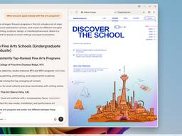
Windows版「Copilot」アプリにWeb閲覧用のサイドペイン、高速化や安定化も図られる／まず「Windows Insider」のテスターを対象に段階的に提供 2窓の杜
米Microsoftは3月4日（現地時間）、Windows版「Copilot」アプリの改善を発表した（v146.0.3856.39以降）。「Copilot」アプリでリンクを開くと、別ウィンドウではなくサイドペインに表示されるようになる。
3日前
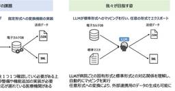
“医療特化”の日本語LLM開発、東大松尾研やさくらなど 研究者に無償提供 6ITmedia AI＋ 最新記事一覧
AIの研究で知られる東京大学の松尾・岩澤研究室は、医療分野に特化した日本語LLM「Weblab-MedLLM-Qwen-2.5-109B-Instruct」を開発したと発表した。
3日前
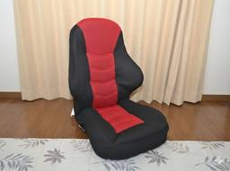
「ゲーミング座椅子」ならゲームも普段の生活も快適！【石田賀津男の『酒の肴にPCゲーム』】 1窓の杜
先日、新たにゲーミングデバイスを購入した。「ゲーミングザイス」である。ニトリの製品型番だと「LC-B09GAM RE」で、要は座椅子だ。
3日前
Qiita AI Summit開催レポート！AI時代における開発組織のあり方とは？  Qiita Zine
Qiita Zine
2026年01月29日（木）、Qiita株式会社は渋谷ヒカリエ（東京都渋谷区）にて、ハイブリットイベント「Qiita AI Summit 〜AI時代が訪れた今、開発組織のあり方を考える〜」を開催しました。オフライン会場・ […]投稿 Qiita AI Summit開催レポート！AI時代における開発組織のあり方とは？ は Qiita Zine に最初に表示されました。
3日前

LLMの構造化出力エラーを87％削減した実践手法 ── Gemini API 10万件運用の知見 1 ZOZO TECH BLOG
はじめに こんにちは、データサイエンス部コーディネートサイエンスブロックの大川です。私たちは、WEARにおける「似合う」をユーザーに届けるため、LLMやマルチモーダルAIを活用してコーディネートの特徴抽出や似合うに関する独自の判定処理のR&Dを行っています。 LLMが台頭して以降、LLMに構造化出力を要求するタスクは増えています。数百件のテストでは問題なく動いていたシステムが、本番運用で10万件・100万件規模の推論を回すと思わぬエラーに直面することがあります。 本記事では、ファッション画像から柄の特徴を抽出するタスクを本番運用する過程で直面した課題と、その解決策を共有します。具体的には、エラ…
3日前
メールサーバの新たな選択肢「Stalwart Mail Server」を試す 7 さくらのナレッジ
はじめに こんにちは、京都工芸繊維大学ロボコン挑戦プロジェクトのマンゴーです。この記事では、さくらインターネット様より提供いただいた「さくらのVPS」で使用しているメールサーバソフトウェア「Stalwart Mail S […]
3日前
デザイナーとして活躍中のid:tikedaさんを訪問 | はてな卒業生訪問企画 [#20] 22 Hatena Developer Blog
連載企画「卒業生訪問インタビュー」 第20回のゲストは、株式会社くふうカンパニーホールディングスの専門役員であり、ご自身で立ち上げたデザインアンドライフ株式会社、株式会社CLANの代表取締役を務める id:tikedaさんこと、デザイナーの池田拓司さんです。。はてな取締役のid:onishiがお話を伺いました。
3日前
OpenAI、「Codex」のWindows版もリリース 2ITmedia AI＋ 最新記事一覧
OpenAIは、AIエージェントを統合管理できる開発者向けデスクトップ環境「Codex」アプリのWindows版を公開した。macOS版は2月にリリース済みだ。複数のエージェントをGUI上で並列稼働させ、複雑な開発タスクを指揮できるのが特徴。ChatGPTの各プランで利用可能で、OSをまたいだ作業の同期にも対応する。
3日前
AIノートブック「NotebookLM」の動画概要が進化、まるで映画のようなクオリティに／「Gemini 3」＋「Nano Banana Pro」＋「Veo 3」で実現 37窓の杜
米Googleは3月4日（現地時間）、AIノートブック「NotebookLM」で“シネマティック動画概要”（Cinematic Video Overviews）を生成できるようになったと発表した。
3日前

freee × Sansan QA × AI 現場最前線 イベントレポート +告知 Sansan Tech Blog
先日2/18に、フリー株式会社様とSansanの共催でQAに関する共同イベントを開催しました！ 本ブログは簡単なイベントレポートと、時間の都合上回答できなかった質問について、回答いたします。 https://sansan.connpass.com/event/379826/ イベントレポート 改めまして、今回のイベントにて登壇いたしました、 技術本部 Quality Assurance Engineering Unit SETチーム所属の大房です。 当日は「【テーマ2】AIで自動テストの運用・保守はどこまで楽になるか？」にて、SansanのQA SETとしてAIの取り組みについて紹介しました。…
3日前
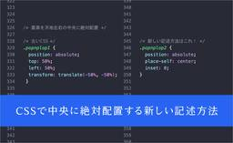
これはかなり万能に使える！ たった3行のCSSで、要素を中央に絶対配置する新しい記述方法
86 コリス
CSSで要素を中央に絶対配置、特にモーダル、メッセージ、スタック、ポップオーバーなどを中央配置するときに適したCSSの新しい記述方法を紹介します。 古い記述方法では、負のパーセンテージを使用していたり、直感的ではないCS […]
3日前
パーソナルコンピュータは、ローカルLLMで再びパーソナルになる 1 noteエンジニアチーム 公式マガジン
noteエンジニアチーム 公式マガジン
「コードを書く」から「コードが生まれる」へ1972年、アラン・ケイはDynabookの構想において、あらゆるメディアをシミュレートしながらユーザー自身が書き換えられる「メタメディア」としてのコンピュータを提唱し、それを具体化したのがSmalltalkだった。Smalltalkは言語・OS・開発環境・UIフレームワークが一体となった「生きた環境」であり、画面上のすべての要素、ウィンドウからクラス定義までがオブジェクトとして等しく開かれ、コンパイルや再起動なしにその場で書き換えられた。今日のOSがアプリケーションを閉じたバイナリとして配布するのとは対照的に、Smalltalkには「アプリケーション」と「環境」の境界そのものが存在せず、ユーザーが操作するもの・それを動かすコード・そのコードを編集するツールがすべて同じ空間に同じ言語で書かれていた。「アプリを使う人」と「アプリを作る人」の区別は、設計レベルで存在しなかったのである。続きをみる
3日前
SIMフリースマホ「arrows We2 Plus M06」が25％OFFの37,350円【Amazon新生活セール】【本日みつけたお買い得情報】 窓の杜
Amazon.co.jpでは、3月6日（金）～3月9日（月）にかけて春のビッグセールである「新生活セール」を開催します。それに先駆けてすでに「新生活先行セール」が始まっており、多数の商品がお買い得価格で販売されています。
3日前
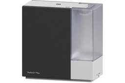
花粉対策や空調効率化に！ダイニチ工業の加湿器が安い【Amazon新生活セール】【本日みつけたお買い得情報】 窓の杜
Amazon.co.jpでは、3月6日（金）～3月9日（月）にかけて春のビッグセールである「新生活セール」を開催します。それに先駆けて「新生活先行セール」が始まっており、多数の商品がお買い得価格で販売されています。ダイニチ工業のストアでは、同社の加湿器のセールが行われています。
3日前
4TB～18TBの内蔵用HDDがセール中、Western DigitalやSeagate製【Amazon新生活セール】【本日みつけたお買い得情報】 窓の杜
Amazon.co.jpでは、3月6日（金）～3月9日（月）にかけて春のビッグセールである「新生活セール」を開催します。それに先駆けてすでに「新生活先行セール」が始まっており、多数の商品がお買い得価格で販売されています。
3日前

バックエンドエンジニアがフロントエンドをLLMに頼って実装した反省点 55 SmartHR Tech Blog
SmartHRでプロダクトエンジニアをしている大澤と申します。この記事では、バックエンドエンジニアである自分がフロントエンドのコードをLLMに頼って実装した際の反省点について紹介します。 現在、LLMはだいぶ良い感じのコードを書いてくれるようになってきています。Claude Opus 4.6が生成したRubyのコードはあまり手直しの必要を感じません。日々驚いています。 ですが、それは自分がRubyとRuby on Railsの知識があるからです。 私はTypeScriptとReactについてあまり詳しくありません。SmartHRでは頼もしすぎるフロントエンドが強い同僚の方々に助けられてコードを…
3日前
花粉対策に！アレルギー鼻炎薬・点鼻薬が安い【Amazon新生活セール】【本日みつけたお買い得情報】 窓の杜
Amazon.co.jpでは、3月6日（金）～3月9日（月）にかけて春のビッグセールである「新生活セール」を開催します。それに先駆けてすでに「新生活先行セール」が始まっており、多数の商品がお買い得価格で販売されています。
3日前
攻撃はもう外から来ない？ 2300億件の脅威観測から見えた事実 6
ITmedia AI＋ 最新記事一覧
Cloudflareはグローバル脅威レポートを発表した。サイバー攻撃手法の進化や攻撃者によるAI活用の実態を詳細に分析している。攻撃トレンドの変化に伴い、従来の防御手法が限界を迎えていることを指摘し、戦略の転換を推奨している。
3日前
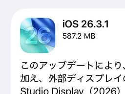
外部ディスプレイ対応を拡充した「iOS 26.3.1」など、AppleがOSを一斉アップデート／CVE番号が割り当てられた脆弱性はなし 3窓の杜
米Appleは3月4日（現地時間）、自社OSの一斉アップデートを実施した。更新されたOSは以下の通り。
3日前
Claude Codeの重大な脆弱性を分析 開発者への3つの影響とは？ 9ITmedia AI＋ 最新記事一覧
Check PointはClaude Codeに見つかった脆弱性の詳細な分析を報告した。悪意ある設定ファイルによって遠隔コード実行やAPIキー流出の恐れがある。同社は不審なプロジェクトを開くだけで攻撃が始まる恐れがあると警告している。
3日前

回り道のキャリアがQAエンジニアで武器になった話 弁護士ドットコム株式会社 Creators’ blog
はじめに こんにちは。クラウドサインでQAエンジニアをしているSです。 QAやテストの経験はあるけどブランクがあったり、別の職種を経由していて転職に踏み出せない。そんな方に向けて、情シスからQAに転職した私の約1年半を振り返ります。 前職では情シスとして働いており、社内からの問い合わせに日々対応していました。問い合わせを受けたサービスに対し、「確かに使いづらいな…」などと、サービスそのものへの課題を感じる機会がたくさんありました。日に日に、「このサービス自体を良くしたい」と思うようになり、QAエンジニアを目指すようになります。 回り道に見えたキャリアが実はQAの仕事に直結していた。この記事では…
3日前
設計の意思決定を「感覚から根拠へ」──3アーキテクチャ並列設計の仕組み 2 Findy Tech Blog
Findy Tech Blog
こんにちは。ファインディ株式会社でテックリードマネージャーをやらせてもらってる戸田です。 ファインディでは要件定義から設計・タスク分解・Issue生成までをAIに任せるカスタムコマンドを開発しています。前回の記事ではコマンドの全体フローを紹介しました。 tech.findy.co.jp AIにタスク分解やIssueを作成してもらうには、先に実装方針を明確にする必要があります。方針が固まっていないと、生成されるタスクの粒度や設計の一貫性がブレてしまうからです。このコマンドの設計ステップでは、3つのアーキテクチャアプローチを並列で設計し、トレードオフを比較して最適な方針を選択します。 本記事では、…
3日前
お気に入りサイトの新着をメールアプリのように受信・閲覧できる「RSS Guard」がv5.0に／Windows/Mac/Linux対応、軽量＆高機能なフィードリーダーがメジャーバージョンアップ 24窓の杜
クロスプラットフォーム対応の軽量フィードリーダー「RSS Guard」が2月26日（日本時間）、v5.0.0へとアップデートされた。2021年9月以来、約4年半ぶりのメジャーバージョンアップとなる。
3日前

AIを個人で使ってるだけじゃ、もったいない——チームの文化として根付かせるための仕組みとは？  Blog on DeNA Engineering
Blog on DeNA Engineering
DeNAが推進する「AIジャーニー」。全社的な盛り上がりの裏側で、プロダクト開発の最前線ではどのような変化が起きているのでしょうか。今回は、ヘルスケア事業本部で kencom の開発を担う平子さんと刀禰さんに、現場主導で進めてきたAI活用の軌跡を伺いました。──まずは、お二人の経歴や現在の具体的な仕事内容について教えてください。平子 裕喜（以下、平子）： 私は2013年に新卒で入社し、今年13年目になります。最初は Mobage のバックエンドエンジニアをしていたのですが、徐々にマネジメントや採用・育成に関わることが多くなりました。現在はヘルスケア事業本部で kencom というプロダクトのエンジニアリングマネージャー（EM）を務める傍ら、アジャイルコーチや採用リード、そしてAI推進の役割なども担っています。
3日前
3/4 (水)
Rails: ViewComponentで最初に作るのは「ダイアログコンポーネント」がおすすめ 2
TechRacho
最初に何をコンポーネント化するか ViewComponentを初めて導入したとき、何をコンポーネント化するかで迷ったことはありませんか？ 私も最初のうちはボタンを闇雲にコンポーネント化してみたり、フォームのフィールドをコンポーネント化してみたり、はたまたセレクトボックスをコンポーネント化してみたりと、ぺったんぺったん作ったり壊したりを何度も繰り返しました。 ついでながら、ViewComponentはしょせんビューなので、モデルと違っていくらでも気軽に壊しては作り直しができるのがいいところだと思っています😉。 最初は「ダイアログ」をコンポーネント化してみよう そして今は、アプリで最初に作るコンポーネントは「ダイアロ […]The post Rails: ViewComponentで最初に作るのは「ダイアログコンポーネント」がおすすめ first appeared on TechRacho.
4日前

Go Conference mini in Sendai 2026 登壇&参加レポート 1 ZOZO TECH BLOG
はじめに こんにちは、検索基盤部の倉澤です。ZOZOTOWNの検索機能のバックエンドの開発を担当しています。検索基盤部の一部システムではGoを採用しています。 2026年2月21日（土）にGo Conference mini in Sendai 2026が開催されました。本記事では、会場の様子や個人的に印象に残ったセッション・LTについて紹介します。また、私もLT枠で登壇したため当日話しきれなかった内容もあわせて紹介します。 目次 はじめに 目次 Go Conference mini in Sendai 2026とは 会場の様子 セッション AI時代のGo開発2026 爆速開発のためのガードレ…
4日前
Qiitaニュース | プログラミングを15年やって、一番大事なのはプログラミングじゃないと気づいた Qiita Zine
2026/03/04に配信された Qiitaニュースのバックナンバーです。 Dear great hackers, こんにちは！いつもQiitaをご利用いただきありがとうございます。 先週いいねが多かった投稿ベスト20( […]投稿 Qiitaニュース | プログラミングを15年やって、一番大事なのはプログラミングじゃないと気づいた は Qiita Zine に最初に表示されました。
4日前

Vol. 09 グラフデータベースで企業変遷を管理する ―Spanner Graphパフォーマンス検証― Sansan Tech Blog
まえがき この記事は、Sansan Data Intelligence開発Unitブログリレーの第9弾です。 こんにちは、技術本部Data Intelligence Engineering Unitの滑川です。 本記事ではSansan Data Intelligenceの中で動くMaster Data Systemに採用されている「グラフ構造」と「Cloud Spanner」を題材に、Spanner Graphがどのように活用できるのか、またそのパフォーマンスについて検証してみたのでご紹介したいと思います。
4日前

AI生成ユニットテスト運用の実践 — カバレッジ2倍の成果とレビュー設計のリアル 38 ZOZO TECH BLOG
はじめに こんにちは、グローバルシステム部フロントエンドブロックの林です。 私が所属するチームではZOZOMETRYというBtoBサービスを開発しています。スマートフォンで身体を計測し、計測結果を3Dモデルやデータとして可視化・Web上で管理できるサービスです。 私たちのチームではAIにユニットテストを書かせ、マージまでの過程を改善する施策を実施しました。結果としては、2か月でテスト数が57％増え、カバレッジは約2倍になりました。 この取り組みはテストを増やすという面ではうまくいきましたが、AIが書いたコードを人間がどうレビューするかという点で、いくつかの壁にぶつかりました。 この記事では、以…
4日前

コンテナー型GPUクラウドサービス「高火力 DOK」でOllamaを実行する さくらのナレッジ
高火力 DOKはコンテナー型のGPUサービスで、NVIDIA V100やH100を実行時間課金で利用できるサービスです。 今回はこの高火力 DOKを使って、Ollamaを実行してみます。ローカルにGPUがなくとも、速いレ […]
4日前
We Automated the Tedious Parts of Development — Here’s How  CyberAgent Developers Blog | サイバーエージェント デベロッパーズブログ
CyberAgent Developers Blog | サイバーエージェント デベロッパーズブログ
Introduction Hey, I’m VuongVu, a backend eng ...
4日前
Amazonで新生活セールが開催！ 私が購入して本当によかったもの、見逃しがちなお買い得品を紹介します 1 コリス
※本ページは、アフィリエイト広告を利用しています。 Amazonでビッグセール「新生活セール」が開催です！ このセールでは特に生活用品が数多く対象になっており、通常のセールよりもかなり安くなって、非常にお買い得です。 セ […]
4日前

Network Connectivity Centerで異なるプロジェクトのVPC同士を接続する G-gen Tech Blog
G-gen の助田です。当記事では、Network Connectivity Center を使い、異なるプロジェクトの VPC ネットワーク同士を接続する手順を解説します。 はじめに Network Connectivity Center とは 検証シナリオ ハイブリッドスポーク使用時の注意点 設定手順 事前準備 プロジェクト A: NCC ハブの作成とスポークの接続 プロジェクト B: スポークの作成と接続リクエストの送信 プロジェクト A: 接続リクエストの承認 疎通確認 ルートテーブルの確認 PING による疎通テスト はじめに Network Connectivity Center …
4日前

Kubernetes初心者が数万QPS環境でのカナリアリリース導入に挑戦した CyberAgent Developers Blog | サイバーエージェント デベロッパーズブログ
はじめに こんにちは、奈良先端科学技術大学院大学 修士 1 年 の 東迎健太郎 です。 2025年 ...
4日前
Fastly メトリクス基盤を GKE に移行して精度も改善した話 1 CyberAgent Developers Blog | サイバーエージェント デベロッパーズブログ
はじめに こんにちは！2026年2月に CA Tech Job インターン生として就業 ...
4日前
広告収入に頼らないブログ運営？Buy me a coffeeで見つけた新しい応援のかたち Webクリエイターボックス
最近のブログやニュースサイトって、広告の見せ方も種類もなんだかアレでげんなりしちゃいますよね…。そこで私が使ってみた「Buy me a coffee」について紹介します。広告収入以外の可能性を探しているクリエイターの皆さんに、一つのヒントとして届いたら嬉しいです！
4日前
Unityクライアント環境におけるSDD活用事例 ── アンチパターンとその改善 2 CyberAgent Developers Blog | サイバーエージェント デベロッパーズブログ
はじめに GOODROIDでUnityエンジニアをしています、及川です。 普段は基盤領域や全体設計な ...
4日前
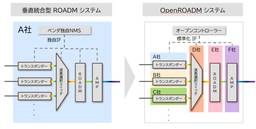
OpenROADMに準拠した光伝送網の概要・構築編― APNテストベッドで探る技術と運用手法(その2) 4 NTT docomo Business Engineers' Blog
イノベーションセンターIOWN推進室の鈴木と千葉です。普段は全社検証網の技術検証、構築、運用を担当しています。 前回オープントランスポンダーの世界 ― APNテストベッドで探る技術と運用手法（その1）にて、クライアント信号を光波長信号に変換する「オープントランスポンダー」を取り上げました。 今回はその続編として光ネットワークにおいて波長信号の多重化・分波、スイッチング、および光信号の増幅・パワー調整を一手に担うROADM（Reconfigurable Optical Add/Drop Multiplexer）の物理構築について実務的な設計ポイントや構築の勘所を紹介します。 OpenROADMア…
4日前

Findyの爆速開発を支えるAIによるタスク分解の粒度設計 13 Findy Tech Blog
こんにちは。ファインディ株式会社でテックリードマネージャーをやらせてもらってる戸田です。 ファインディでは要件定義から設計・タスク分解・Issue生成までをAIに任せるカスタムコマンドを開発しています。 tech.findy.co.jp このコマンドの中にはAIがタスク分解を行うステップがありますが、分解の粒度が適切でなければ、実装がしやすいどころか混乱の元になります。大きすぎるタスクはレビューが困難になり、タスクを細かく分割しすぎると実装が中途半端でビルドが通らないPRが生まれます。 そこで、AIがタスクを分解する際の判断基準として、具体的なルールを定めました。この記事では、そのタスク分解ス…
4日前

LLM-as-a-Judge奮闘記！〜評価軸と技術選定のお話〜  ユニファ開発者ブログ
ユニファ開発者ブログ
発見的推理は最終的で厳密なものではなく,（中略）その目的は当面する問題の解を求めることである. ジョージ・ポリア 著、柿内 賢信 訳：いかにして問題をとくか より はじめに LLM-as-a-Judgeって、なに？ はじめの一歩 「軸」を決める 「評価軸」を決める 技術選定 「軸」「評価軸」「技術選定」からのインサイト おわりに
4日前
2026年は1984なのか ― AIと国家、そして合法の解釈権 9 ニューロサイエンスとマーケティングの間 - Between Neuroscience and Marketing
Leica M10P, 1.4/50 Summilux ASPH, RAW米国防総省が提示した"all lawful purposes"（法的に許されるすべての用途）での利用を認める契約文書を、Anthropicが拒否したというニュースを数日前に見た*1。その契約には、全自動の殺傷可能な兵器や、国民全体をリアルタイムで監視するようなものが含まれうるということが理由のようだ。この動きには、どこか既視感のようなものを覚えた。国家は強制権限の発動を示唆し、AIプラットフォーム（PF）を抱える企業は「良心」を掲げて線を引く。OpenAIやGoogleは別の形で応じ、社内では反発の署名が広がる。AI P…
4日前
3/3 (火)
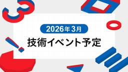
2026年3月技術イベント予定 Sansan Tech Blog
Sansan株式会社では、技術イベントや勉強会の主催・登壇・協賛を行っています。 各イベントの詳細については、以下のリンクからご確認ください。 ※開催状況により、すでに受付を終了している場合がございます。 ※掲載している内容は公開当時の情報です。最新情報は各イベントページをご確認ください。
5日前

Rails: Hotwire Nativeをデバッグする（4）ネイティブアプリのログを取る（翻訳） 1 TechRacho
概要 元サイトの許諾を得て翻訳・公開いたします。 英語記事: Debugging Hotwire Native - Start with the Obvious Questions | William Kennedy 原文公開日: 2025年11月03日 原著者: William Kennedy 日本語タイトルは内容に即したものにしました。 従来Turbo NativeとStradaと呼ばれていたものは、現在はHotwire Nativeに統合されました。 参考: Hotwire Native: Hotwire Native is a web-first framework for building native […]The post Rails: Hotwire Nativeをデバッグする（4）ネイティブアプリのログを取る（翻訳） first appeared on TechRacho.
5日前

EMConf JP 2026にOperation Supportersとして協賛します #emconf_jp 1 LayerX エンジニアブログ
こんにちは、バクラク事業部でエンジニアをしている須藤（@sudoakiy）です。 LayerXは、EMConf JP 2026（Engineering Management Conference Japan） にOperation Supportersとして協賛いたします。 昨年に続いての協賛・ブース出展となります。 エンジニアリングマネジメントを実践する皆さんと直接お話できるこの機会を、今年もとても楽しみにしています。 EMConf JP とは EMConf JP 2026 の概要 協賛の背景 Engineering Manager向けコンテンツ 「増幅」と「触媒」 ブース出展します！ 🗳 …
5日前
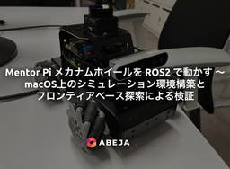
Mentor Pi メカナムホイールを ROS 2 で動かす 〜 macOS 上のシミュレーション環境構築とフロンティアベース探索による検証
ABEJA Tech Blog
導入 ABEJA でインターンをさせていただいている青木です。 本記事では、インターンの成果として「メカナムホイールを搭載した 4 輪ロボット Mentor Pi (Mecanum) を ROS 2 で動かし、macOS 上でシミュレーション・探索まで行う環境を整える」という取り組みを紹介します。 私のロボットに関する記憶として、ポケモンのデオキシスの映画で出てきたホットドックが買える移動販売機のようなものが、幼い自分にとって魅力的に映った記憶があります。移動型のロボットは汎用性が高く、これからさらに普及していくであろうと思っています。 そんな中で出会ったのが、Hiwonder 社が提供する …
5日前
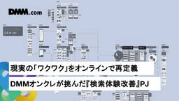
現実の「ワクワク」をオンラインで再定義 DMMオンクレが挑んだ『検索体験改善』プロジェクト DMM Developers Blog
チャオ！DMMオンクレのプロダクトマネージャー（PdM）青井裕紀です。 本日は、昨年の大規模アップデートで実施した『検索体験改善』プロジェクトについてのお話をしようと思います。 ※この記事は画像の一部に生成AIが利用されています。 第1章：いち消費者として感じた「見つからない」もどかしさ 第2章：リアルの「ザッピング体験」を手のひらに 第3章：「映り込み」をめぐる現場との対話 第4章：DMMオンクレが描く「持続可能」な幸せの形 執筆に当たって / スペシャルサンクス まず、DMMオンクレはミッションとして『誰もが夢中になれるエンタメスペースを創造する』というものを掲げてきました。オンラインクレ…
5日前

Vol. 08 敢えて速度より質を重視するAI活用 Sansan Tech Blog
この記事は、Sansan Data Intelligence 開発Unit ブログリレーの第8弾です！！こんにちは。技術本部Data Intelligence Engineering Unit Data Hubグループの秋田です。今回のブログリレーでは、新プロダクトSansan Data Intelligence（SDI）の立ち上げメンバーが、多種多様な観点から立ち上げにどう関わったのかを取り上げています。私はSDI開発ではコアドメインのバックエンド実装やAIの導入推進を担当しています。今回はSDI開発立ち上げ期においてAI活用をどのように進めたかについて話したいと思います。
5日前

AI×福岡×横断で“試す”を加速：Tech Link Fukuoka #2レポート LINEヤフー Tech Blog (LY Corporation Tech Blog
はじめにこんにちは！DevRelの井上です。2026年1月、福岡拠点にて開催した「Tech Link Fukuoka #2」についてご紹介します。Tech Link Fukuokaは、LINEヤフーの...
5日前

Swaggerを使ったAPIドキュメントの作成と、バックエンドとフロントエンド間の連携 LINEヤフー Tech Blog (LY Corporation Tech Blog
この記事は、合併前の旧ブログに掲載していた記事（初出：2020年11月25日）を、現在のブログへ移管したものです。内容は初出時点のものです。こんにちは。LINE Growth Technology福岡...
5日前
マトリックス組織×リモートでコードレビューのリードタイムを50%以上短縮した取り組み 19 ZOZO TECH BLOG
はじめに こんにちは、WEAR開発部バックエンドブロックのブロック長を務めている伊藤です。普段は弊社サービスであるWEARのバックエンド開発・組織運営を担当しています。 WEARのバックエンドブロックは約10名のエンジニアで構成されています。組織としてはマトリックス型を採用しており、各メンバーはバックエンドブロックに所属しながら、複数の職種で構成されるスクラムチームにも1〜3名ずつ配置されています。スクラムチームにはPdM（プロダクトマネージャー）やデザイナー、フロントエンドエンジニア、QAなど他職種のメンバーが集まります。加えてリモートワークが基本の環境です。 この体制ではコードレビューのリ…
5日前
AIスパコン「さくらONE」で挑むLLM・HPCベンチマーク (3) 「さくらONE」で挑戦するTOP500 さくらのナレッジ
はじめに AIとHPCが急速に融合するいま、単に速いだけでは「使える計算機」にはなりません。学習・推論・数値計算が同居する現場では、演算性能だけでなく、メモリ帯域やネットワーク、ソフトウェアスタック、電力効率、そして可用 […]
5日前

地方で働く、セキュリティエンジニアのリアル Sansan Tech Blog
©（公財）名古屋観光コンベンションビューロー（名古屋コンシェルジュ フォトライブラリー） こんにちは、Sansan株式会社 情報セキュリティ部の松尾です。 2025年12月、私は東京の本社から愛知県の中部支店へ異動しました。セキュリティ監視やインシデント対応を担うCSIRT/SOCという立場での地方勤務。 「24時間365日の監視体制が必要なセキュリティ業務を、地方でできるの？」と思われる方もいるかもしれません。 実際に3カ月弱経験してみて、「地方×セキュリティ」の働き方には大きな可能性があると実感しています。今回は、その実体験をお伝えしたいと思います。 私の仕事：SOCとCSIRTって何？ …
5日前
セキュリティカンファレンス「NCA Annual Conference 2025」に登壇してきました 9
NTT docomo Business Engineers' Blog
こんにちは、イノベーションセンターのNetwork Analytics for Security（NA4Sec）プロジェクトの山門です。 この記事では、2025年12月18日-19日に開催されたカンファレンスNCA Annual Conference 2025へ登壇してきた模様を紹介します。 組織におけるドメイン名の「終活（廃棄）」に伴うリスクをテーマに、利用終了ドメイン名に対する2.3億件のログ分析結果を説明しました。ECS（EDNS-Client-Subnet）を用いた分析により、「利用終了後も攻撃・スキャンが絶えない」という実態や、観測行為自体が攻撃を誘発する「観察者効果」といった興味深…
5日前
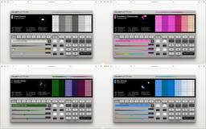
OKLCHカラーを使うと異なる色でトーンを合わせたり、単色のシェードも簡単！ UIデザイン用のカラーパレットを生成するツール -ColorPalette Pro 14 コリス
見た目はDTMツールですが、中身はOKLCHカラーでUIデザイン用のカラーパレットを生成できる無料ツールを紹介します。 ベースカラーを指定するだけで、6色で構成される美しいカラーパレットを瞬時に生成します。色相環を元にし […]
5日前
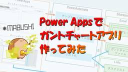
Power Appsでガントチャートアプリ作ってみた 1 IIJ Engineers Blog
はじめまして！ 石間伏（ISHIMABUSHI）と申します。 普段はサービスコーディネータとして活動しています。 サービスコーディネータは、IIJサービスをご契約いただいたお客様の導入プロジェクトの...
5日前
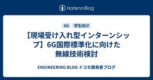
【現場受け入れ型インターンシップ】6G国際標準化に向けた無線技術検討  ENGINEERING BLOG ドコモ開発者ブログ
ENGINEERING BLOG ドコモ開発者ブログ
はじめに こんにちは！NTTドコモ 6Gテック部の平野です！ ドコモでは様々なインターンシップを開催しています。その中でも、現場受け入れ型インターンシップは、実際の職場で社員と共に実務の体験ができる実践型のインターンシップです。 今回は2025年の夏に行われた現場受け入れ型インターンシップ（詳細はこちら）に関して、私たちのチームで行った内容を紹介します。また実際に参加いただいた高木さんの感想も最後に紹介します。 本インターンシップでは、高木さんに技術テーマの課題調査から解決策の検討までを取組んでいただきました。 ドコモのインターンシップや無線通信の標準化に興味がある方は、ぜひ最後までお読みくだ…
5日前

生成AI時代、SaaSはどう生き残るのか？── デブサミ2026で話したこと 弁護士ドットコム株式会社 Creators’ blog
こんにちは。弁護士ドットコムでLegal Brain（リーガルブレイン）のHead of Product（製品責任者）をしている稲垣（@YujiInagaki1）です。 先日（2/18）、Developers Summit 2026（デブサミ）の「Dev x PM Day」に登壇させていただきました。テーマは「生成AI時代のSaaSにおける、Moat（競争優位）の作り方」です。 登壇後のアンケートにて、ありがたいことに「参考になった！」とか「うちのプロダクトにも使えそう」という声をいくつかいただいたので、登壇の内容をブログにまとめてみます。少しでも参考になれば幸いです。 はじめに：「SaaS …
5日前
3/2 (月)
Rails: カスタムTurbo Streamでブラウザタブのファビコンをリアルタイム更新する（翻訳） 1 TechRacho
概要 元サイトの許諾を得て翻訳・公開いたします。 英語記事: Update favicon with badge using custom turbo streams in Rails | Rails Designer 原文公開日: 2025/11/20 原著者: Rails Designer -- Railsフロントエンド関連記事に加えて、ViewComponentとTailwind CSSを用いた美しいUIコンポーネントなどさまざまな製品を販売しています 日本語タイトルは内容に即したものにしました。 Rails: カスタムTurbo Streamでブラウザタブのファビコンをリアルタイム更新する（翻訳） 前回の […]The post Rails: カスタムTurbo Streamでブラウザタブのファビコンをリアルタイム更新する（翻訳） first appeared on TechRacho.
6日前

Matsuriba MAX 2026にゴールドスポンサーとして協賛します Sansan Tech Blog
こんにちは。Sansan中部支店でEightの開発をしている井上です。 昨年に引き続き、Sansanは東海地方最大の学生エンジニアイベント「Matsuriba MAX 2026」にゴールドスポンサーとして協賛することになりました！🎉 matsuriba.nxtend.or.jp
6日前
【未踏会議2026 MEET DAY】LayerX から Ai Workforce 事業 CEO が登壇 & ブース出展します！ 1 LayerX エンジニアブログ
2026年1月に入社しました、TechPR の太田です。 初ブログで LayerX が大切にしている未踏会議の告知を担当することになり、大変うれしく思います！ さて、本日はその舞台となる、2026年3月7日(土) 開催の「未踏会議2026 MEET DAY」への登壇・ブース出展についてお知らせします。 未踏会議2026 開催概要 日時：2026年3月7日（土）10:00～17:00（受付開始 9:30） 場所：東京ミッドタウン・ホール 〒107-0052 東京都港区赤坂9-7-2 オンライン視聴: ニコニコ生放送、YouTube LIVE 主催：独立行政法人 情報処理推進機構（IPA）、一般社…
6日前

2025年度新卒エンジニア研修レポート  dwango on GitHub
dwango on GitHub
はじめまして。2025年新卒エンジニアのtakeumaです。現在はニコニコQセクションに所属しています。本記事は、2025年4月中旬から7月末にかけて行われたドワンゴの2025年新卒エンジニア研修について、その内容と感想をまとめたものです。
6日前
CAM の SRE Unitで学んだ、Cloud Nativeな基盤を「安全に運用し続ける」ための視点と設計 1 CyberAgent Developers Blog | サイバーエージェント デベロッパーズブログ
はじめに 東京科学大学情報理工学院情報工学系修士1年の千代丸怜央と申します。 2025年2月7日から ...
6日前
「EMConf JP 2026非公式懇親会」を開催します！ SmartHR Tech Blog
EMConf JP 2026非公式懇親会 EMConf JP 2026 後に、カジュアルに交流できる場を用意しました！ 公式懇親会のチケットが早々に完売してしまったと伺い、微力ながら、私たちも力になりたいと思い企画しました！（公式運営の皆さまにも快諾いただいています） 詳細は以下です: 日時: 2026年3月04日(水) 18:45〜 場所: ニルワナム 有明店（Nirvanam） 様 会場から徒歩1分、貸切予定です 20名以上の参加で貸切となります 参加費: 無料です 申し込み: イベントページ 補足: 本イベントは、EMConf JP 2026にシルバースポンサー兼ランチスポンサーとして協…
6日前

新規事業部アプリチームが実践する、ボトムアップで改善が回る文化づくりとAI活用 13 ZOZO TECH BLOG
はじめに こんにちは、新規事業部フロントエンドブロックの池田です。普段はZOZOマッチのアプリ開発を担当しています。ZOZOマッチは、ファッションの好みからZOZO独自のAIが「好みの雰囲気」の相手を紹介するマッチングアプリです。開発にはFlutterを採用しています。 フロントエンドブロックは2024年に発足したチームです。発足間もないチームゆえに、開発を進める中でさまざまな課題に直面しました。本記事では、私たちが「課題をチーム全体で認識し、解決していける文化」を築くために取り組んできたことを紹介します。発足間もないチームでチームビルディングに悩んでいる方や、メンバー間の連携・知見共有に課題…
6日前

VPoE 河合およびCTO 大垣が業務執行役員にW就任 〜AI時代最速の開発組織を目指して〜 2 エムスリーテックブログ
エムスリーテックブログ
はじめに 2026年3月1日、VPoE 河合俊典およびCTO 大垣慶介が新たに業務執行役員に就任し、それぞれ業務執行役員VPoEおよび業務執行役員CTOとなりました。 本記事では、Q&A形式で業務執行役員就任の背景と2人の魅力、これからのエムスリーエンジニアリンググループについてを包み隠さずお伝えします！ 左から取締役CPO山崎、業務執行役員CTOの大垣、業務執行役員VPoE河合 はじめに Q1. なぜ今2人が業務執行役員に？ Q2. “AI時代最速”とは、何の速度を最速化することか？ AIの民主化 => それぞれがプロダクト作りの主人公に 意思決定をボトルネックにしないための組織変革 Q3.…
6日前

第二創業期のメドピアが定義する、次世代エンジニアの「三つの責任」 2 メドピア開発者ブログ
メドピア開発者ブログ
こんにちは。三村（@t_mimura39）です。 メドピアはいま、大きな変革の真っ只中にいます。 2024年の創業20周年や代表交代、そして2025年のMBO。こうした大きな節目を経て、自らを「第二創業期」の只中にあると定義しています。 そんな中で私は、プリンシパルエンジニアの一人として「プロダクト開発組織の未来図」を描き、その実現をリードしています。評価制度や開発フロー・ルールの刷新など、あらゆる変革の根底にあるのは、一つの極めてシンプルな問いです。 「AIが実装を担う未来において、エンジニアは何に責任を持つべきか？」 今回はその問いに対しての一つの答えを書き記したいと思います。 目次 1.…
6日前
KIndle本 春直前の特大セールが開催！ Web制作・UIデザイン・創作用辞典・イラスト関連の良書がお買い得です 1 コリス
※本ページは、アフィリエイト広告を利用しています。 Kindle本の春直前の特大セールが開催されています。Webや紙のデザイン、UIデザイン、Copilotなど生成AI関連、配色本、創作用辞典、同人誌・絵師さん向けのイラ […]
6日前

2026年2月のイチオシGoogle Cloud・Google Workspaceアップデート G-gen Tech Blog
G-gen の杉村です。2026年2月に発表された、Google Cloud や Google Workspace のイチオシアップデートをまとめてご紹介します。記載は全て、記事公開当時のものですのでご留意ください。 はじめに Google Cloud のアップデート BigQuery でパラメータ化クエリがコンソールから実行できるように Spanner で SQL からリモート関数を実行できるように（Preview） Google Cloud remote MCP Server が Resource Manager に対応（Preview） Gemini Enterprise と Noteb…
6日前
AI エージェントに開発チームのサイクルタイム分析を任せてみた 1 弁護士ドットコム株式会社 Creators’ blog
こんにちは。クラウドサインで開発をしている林（@rinyu_tech）です。 チームの開発サイクルタイム分析の負荷を下げるために、AI エージェントと各種サービスを組み合わせて自動化した話を紹介します。 背景 課題提起 取り組んだ結果 もし手動で分析を実施した場合 AI エージェントを用いた分析の場合 接続したデータソース AI が行う分析フロー 分析フローの全体像 カスタムコマンドのプロンプト サービス間の横断分析 長期滞留 PR の原因調査 季節要因の自動判定 それ以外の要因を深掘り 事実と考察の分離 2 ヶ月の運用で分かったこと データの信頼性は AI では解決できない レトロの議論が変…
6日前
ABEMAで取り組んだAIエージェントによるA/Bテスト文化の促進 2 CyberAgent Developers Blog | サイバーエージェント デベロッパーズブログ
はじめに ABEMAのData Scienceチームで、2025年9月から半年間、ミッション型インタ ...
6日前
Helmfile + Argo CD + Renovate で複数環境の K8s 運用を回す構成と工夫 [DeNA インフラ SRE] Blog on DeNA Engineering
はじめに こんにちは、IT 本部 IT 基盤部第二グループの藤田です。IT 基盤部では、組織横断で複数プロダクトのインフラ運用を担当し、基盤の安定稼働やコスト削減に取り組んでいます。私たちのチームでは 2〜3 年ほど前から Helm + Helmfile を活用して Kubernetes（以降 K8s）を運用しています。Helm は Kubernetes のパッケージマネージャーで、アプリケーションを「Chart」として配布・インストールできる仕組みです。Helmfile は複数の Helm リリースを宣言的にまとめて管理し、環境ごとの差分を扱いやすくするためのツールです。
6日前